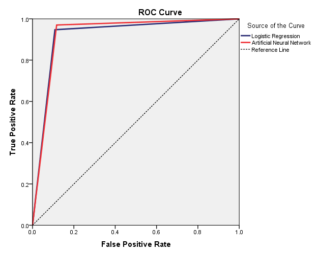
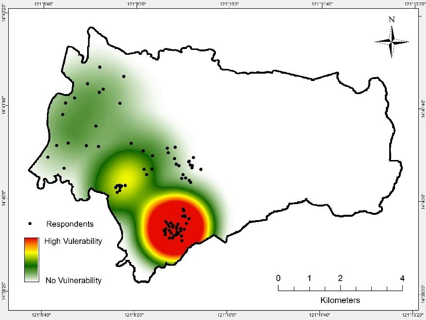

LANDSLIDE RISK ASSESSMENT:
AN INTEGRATED APPROACH IN EVALUATING THE AERIAL HAZARD EXTENT, VULNERABILITY, AND RISK PERCEPTION OF THE SELECTED PEOPLE IN SAN MATEO, RIZAL
Bachelor of Science in Geography
Department of Geography
College of Social Sciences and Philosophy
University of the Philippines
July 2018
ABSTRACT
Despite being one of the fastest growing municipality in Rizal, San Mateo still experiences extreme landslides events. This poses a serious problem to the safety of its current and future residents since the municipality is expected to carry the surplus of the population of the adjacent cities like Quezon City and Marikina City in the future. With this, the main objective of this study is to conduct two different landslide risk assessments using landslide hazard map (LHM), landslide vulnerability map (LVM), and evaluation of the risk-perceptions of the selected people in the municipality. The first landslide risk map (LRM) was produced using the LHM and LVM. LHM was produced through the relational analysis of the different environmental factors and the landslide inventory processed using logistic regression and ANN analysis. LVM and the vulnerability of the people was measured using SVI. Results of the LHM showed that the highly susceptible areas are located in the central and the eastern part of the municipality. Fortunately, no highly susceptible areas are found in the areas where the most vulnerable respondents reside, based on the LVM produced. However, these same vulnerable respondents were considered as highly at risk by the first LRM since they are vulnerable and are still exposed to hazards. Additionally, all the respondents are willing to accept the risks through boosting their knowledge on landslides such as attending seminars and etc. No one is willing to leave the municipality or only pay for their safety. Also, all the respondents were classified as risk averse and risk seekers based on their answers. Most of the locations and concentrations of the people considered as highly at risk by the first LRM is similar with the results of the second LRM produced from the risk-perception of the people. However, rare cases still exist since the individual perceptions of the people are based on their own experiences and rationality. In conclusion, both the two landslide risk maps have their own strengths and weaknesses. While one approach can stand on its own, the two approaches in landslide risk assessments are best when combined.
CHAPTER I: INTRODUCTION
A. Background of the Study
Philippines is one of the many countries in Asia gravely exposed to a vast range of natural hazards and disasters (The Guardian, 2010). From extreme typhoons and almost endless rainfalls, flashfloods, volcanic eruptions, earthquakes, tsunamis, sudden slope failures, down to the most unexpected sinkholes and whirlpools, Philippines really seems to be a converging zone of natural calamities. Even though many countries in Asia are more prone to natural hazard than the Philippines (Assilzadeh, 2010), the social and economic capabilities of this country make it more vulnerable. Japan, for example, has a higher likelihood of disaster occurrence than the Philippines, but it does not make it more vulnerable. According to the 2010 World Disasters Report of the International Federation of Red Cross and Crescent Societies (IFRC), the probability for a Filipino to be killed by a natural disaster is 17 times larger than the probability of a Japanese being killed by the same reason. This is because the difference of the quality of the urban and environmental planning strategies – or the urban risk divide – between the two countries is high, making the former more vulnerable.
This urban risk divide is severe in Asia, especially in the developing countries such as the Philippines. As a third world country situated in a latitude where typhoons frequently pass, and in a region dominated by volcanoes and fault lines, the number of hazards, risks and vulnerabilities that threaten the country is nearly impossible to measure. One leading natural hazard that is widespread in the country is the landslide.
Landslide, put simply, refers to the downward movement of rocks, soil, and debris on an oblique surface or slope (USGS, 2004). Landslides are usually naturally-occurring in the environment, but the incessant disuse of human activities made some of these events to become human-induced. The elements that usually affect the landslide occurrences are slope angle, rainfall, weathering, land cover, overloading, and geology.
The blending of the naturally immense amount of rainfall brought by typhoons and monsoons, and the geological perils (earthquake and volcanic eruptions) that exist in the country transforms the terrain of the Philippines into a landslide-susceptible state. In her interview last 2010, former senior science research specialist of Mines and Geosciences Bureau (MGB) Angelica Sajona told Integrated Regional Information Networks (IRIN) News that "[with] the changing weather conditions and amount of rainfall each season brings, we could categorically state that the number of landslide occurrences is increasing," With 80% of the country's total land area being prone to landslide, MGB has also reported that the country ranks fourth in the list of the most vulnerable countries to landslide hazard and risk in Asia (2010).
Clearly, the intensifying vulnerability of the entire country is associated with the increasing population of its vulnerable communities. As the population grows, more and more people will continue to move away from the city center and settle at the periphery – that is, a place exhibiting rapid urbanization but lower economic and social development (Chiu and Eidsvig, 2016). This study used the case of the National Capital Region and Region – IVA CALABARZON as the example. In the future, surge of population movements from the National Capital Region to the adjacent region is expected to occur. Unfortunately, for this set-up, the general geomorphological make-up of the provinces in the adjacent region, in this case the Region IV-A, is mountainous and rugged, decreasing the number of safe habitable areas while at the same time increasing the number of vulnerable population to landslide. According to a map issued by the Mines and Geosciences Bureau (2011), 59 out of the 141 and municipalities (PSA, 2015) in the region are highly susceptible to landslides. Moreover, among the five provinces in the region, Rizal has the largest area of highly susceptible space for landslides (DENR, 2012). This poses a serious problem to the province because it is currently one of the nearest provinces in Metro Manila that has the highest probability to become the basin of population pours from the country's capital region. As the population of National Capital Region increases, the number of population who will settle in landslide-susceptible areas in Rizal will also increase because, as stated previously, the safe zones in the province are very limited.
This projected problem, however, has already come in to fruition because numerous landslide incidents in the region have already been recorded in the past few years. Several municipalities have already experienced disastrous landslide occurrences, one of which is San Mateo. The latest occurrence was verified last August 2017, where a major highway in Barangay Silangan was destroyed by a slope failure (ABS-CBN News, 2017). Another landslide incident happened last July 2009, where two houses were destroyed (GMA News, 2009). Fortunately, no deaths were recorded in the landslide events that have occurred in San Mateo. However, deaths were confirmed in the landslide incidents in other municipalities. Clearly, safety measures and preparations must be immediately done to further prevent these tragic events from occurring in the municipality. As such, landslide risk planning and mitigation in San Mateo must be carefully administered to keep the communities and the infrastructures away from deadly hazards.
B. Research Objectives
The main objective of this study is to assess the overall condition of the selected people on landslide risks using two completely different approaches: one is founded on GIS-based techniques and quantitative methods; the other is based on the landslide risk – perception of the exposed people in the municipality. Also, this study evaluates the difference in the performance of the two landslide risk assessment approaches. Through performing an integrated approach in the assessment of the landslide hazard extent in the municipality, risk-perception of the selected people in the susceptible areas, and the vulnerability of the selected people in San Mateo, Rizal, the desired final maps were produced. Consequently, specific objectives were further identified to expound the aim:
1. To produce a landslide susceptibility map determining the extent of the landslide hazards in the municipality using logistic regression model and artificial neural network in IBM SPSS Statistics 20 and digital cartography in ArcGIS 10.2.2;
2. To assess the socioeconomic, demographic, and physical vulnerability of the people in the susceptible areas using the Social Vulnerability Index, and produce a vulnerability map displaying the areas of vulnerability to landslide hazards based on the assessments conducted;
3. To produce a landslide risk map based on the landslide hazard map and landslide vulnerability map;
4. To perform an analysis measuring the extent of knowledge and landslide risk-perception of the selected people in the susceptible areas using Preparedness Model and Willingness Diagram, and produce a landslide risk map based on the analysis performed, and finally;
5. To visually compare the two landslide risk maps and construct a possible explanation of their similarities and differences.
Statement of the Problem
This study aimed to answer one general question: what is the current condition of the selected people of San Mateo in terms of landslide risks? The specific objectives of the study remain unclear unless questions were formulated to serve as guides. To further specify and elucidate the detailed aims of this study, below are the research questions that address the methods of every objectives provided:
1. Based on the results of landslide susceptibility map, what areas of San Mateo, Rizal are highly susceptible, moderately susceptible, lowly susceptible, and not susceptible to landslides?
2. Based on the results of the landslide vulnerability map, where are most of the vulnerable population in the municipality located?
3. Based on the landslide risk map produced through combining the landslide hazard map and landslide vulnerability map, where are the respondents who are at high risk mostly concentrated?
4. Based on the preparedness model, how do the selected locals perceive their level of preparedness for landslide events and what factors contribute in shaping their preparation?
5. Based on the willingness diagram, how willing are the respondents to address the issues of landslide risks?
6. Based on the landslide – risk perception of the exposed people in the municipality, where are the people who think they are at risk mostly located?
7. How do the two landslide risk maps produced differ from one another?
C. Significance of the Study
Despite its relatively small area, San Mateo is one of the fastest growing municipalities in the province of Rizal (DILG, n.d.). Aside from the fact that it is one of the nearest municipalities of Rizal from the National Capital Region, San Mateo is famous for its tourism accomplishments and migration records. The municipality has one of the most perfect settings of residential areas in its upland area part – the mountains, trees, and high altitudes provide a remarkable rural experience while at the same time maintaining the urban benefits because of its proximity to the big cities such as Quezon City and Marikina City.
In the future, it can be projected that huge population of people will migrate to the municipality for permanent residency. This event is not far from reality since it is directly beside the most populous city in the country (Quezon City), and spaces are always limited. Given this fact, San Mateo is one of the few municipalities that might receive the largest surplus of the population of the Quezon city in the future.
This projected phenomenon, however, poses a big problem since the residential area of San Mateo is relatively small. The high population flow might force some to live in the high-altitude lands, where landslide hazards are extremely prominent. However, this outcome could be avoided if the landslide risks of some of the people will be assessed now.
This study conducts an assessment on the current conditions of the selected people on landslide risk using two different approach. The results of this study can help in forming an overview of the current situation of the selected people in the municipality, while at the same time evaluates the effectiveness and the performance of the two landslide risk approaches conducted. Considering this fact, the municipality of San Mateo can benefit from the results of this study. This study will also greatly help future researchers who might want to conduct a landslide risk assessment and give them ideas on how to conduct one.
D. Scope and Limitations
The study was conducted inside the administrative boundaries of San Mateo, and the results of the study will only be applicable within the municipality. Most of the data used in generating the landslide hazard map were from credible open source websites. The landslide inventory was produced by the researcher using remote sensing, and no field validations were conducted due to time and capacity constraints. The landslide hazard map made using several statistical analyses is just a general representation of the actual areas with landslide hazards and does not assure a hundred percent precision in defining the boundaries of the real-world hazards. Also, the areas delineated as landslide hazards only show the probability of slope failure of the land. It does not include the buffer zones in which the landslides will pour. Most of the vulnerability measures only pertain to the head of the family surveyed, and not to the entire household/business establishment. The accuracy of the physically-made risk map was based on the accuracy of the final landslide hazard map and the final landslide vulnerability map. This means that the flaws and limitations of the prerequisite maps will also be inherited by the landslide risk map. Also, the method on gathering the perceptions of the respondents were not purely qualitative, as it was only conducted using a questionnaire with open ended questions. Lastly, the general analysis on the overall results of the study only included the 82 respondents who willingly participated, and the conclusions that were generated were only applied to them.
CHAPTER II: REVIEW OF RELATED LITERATURES
This chapter provides all the related literatures that have utilized, if not produced, all the methodologies and frameworks used in this study. The identified themes in this chapter include: (1) methods and techniques used for landslide hazard mapping; (2) generating landslide inventory; (3) possible indicators of slope failures; (4) methods for assessing landslide vulnerability; and (5) methods for assessing landslide risk-perception. Furthermore, this chapter also discusses the gaps in the study and the conceptual framework generated by the researcher.
A. Landslide Risk Assessment
Aside from floods and typhoons, landslides are one of the most common calamities in the Philippines that usually damages the normal lives of the people and their properties (Dumlao and Victor, 2015). The United States Geological Survey (2004) officially defined landslide as an outcome of a “wide variety of processes that induces the downward and outward movement of slope-forming materials including rock, soil, artificial fill, or a combination of these [different materials].” Landslides, however, do not only refer to sliding as what is written in its name but to several types of movement. USGS clarified that the downward movement of the mixed materials, or regolith, during a landslide occurs in many ways such as falling, flowing, spreading, and toppling. The said phenomenon is also classified by these different types of movement and the kinds of material involved. It is important to note that a landslide event that occurs near a community is considered a hazard – that is, a risk to become a potential disaster (Setiawan, Kingma, & Westen, 2014). Hence, different geographic applications and contemporary geotechnical approaches have been conducted to address the issue, one of which is landslide risk assessment.
Landslide risk assessment is an integrated approach in evaluating the current status of an area in terms of landslide hazard, and the exposed vulnerable population. As defined by Flanagan et al., (2011), risk is the product of hazard exposure and vulnerability minus the resources. According to Dwyer et al., (2004); and UCLA Center for Public Health and Disasters (2006), hazard pertains to the existing threat in an area capable of harm. Vulnerability, on the other hand, is the degree to which living things can be affected by a hazard. Resources are the assets or possessions owned by the exposed entity that will decrease the negative effects of the hazards. Finally, risk refers to the probability of someone to be affected by the hazard, which, when realized, might turn to a disaster. Accordingly, in conducting landslide risk assessments, it is important to first identify the areal hazard extent and the degree of vulnerability of the exposed population in that hazard (Abella and Westen, 2007). It is also suggested to consider the resources owned by the exposed population to further strengthen the integrity of the study. This chapter presents different related studies that utilized various methods and techniques in evaluating the landslide hazards, landslide vulnerability, and landslide risks in different contexts
B. Methods and Techniques Used for Landslide Hazard Mapping
Landslide hazard mapping is essential for the assessment and mitigation strategies in areas exposed to landslide hazards. In their study, Pardeshi et al. (2013) stated that recognizing the risks brought about by the landslide hazards can lessen the damages it can deal to the people by almost 90%. This supports the idea that there really is a need for landslide hazard assessments regardless of the difference in approaches used. In their study, Cova and Conger (2003) said that mapping hazards can be divided into two (2) ways based on the method it was conducted: inductive and deductive. Mapping landslide hazards using the inductive approach uses the past landslide events to determine the conditions and factors that caused their occurrences. The spaces where the landslides occurred are analyzed, and areas with the same conditions are then identified using overlays. The deductive approach, on the other hand, recognizes an already existing framework/ model produced using established equations. The equations, e.g., slope instability equations, are applied to the current susceptibility study to identify the areas of landslide hazards. However, the boundary separating the two approaches should not be drawn too sharply because, like Rodriguez and Malpica (2010) said, most hazard analyses could become accurate if viewed from both perspectives. For instance, actual landslide events can be used to help build a deductive process model.
Another classification was suggested by Jime´nez - Pera´lvarez et al. (2008). In their study, they proposed two (2) main methods in which landslide susceptibility can be assessed: (1) based on different models and frameworks “[founded] on physical and mechanic laws of the equilibrium of forces”, and (2) based on established statistical methods founded on the paradigm of positivism. The first method is briefly explained in the study of Autade et al. (2013), wherein they stated that landslide susceptibility visually displays the area where landslides are most likely to occur based on a given set of independent physical factors (climate, soil type, seismic activities, etc.) processed using a model. This is different to the second approach of landslide susceptibility assessment, a statistical approach solely based on mathematical analysis, wherein the susceptibility is measured as the probability of spatial occurrence of slope failures produced from a set of statistically-assessed parameters in relation to the previous and current landslide inventory (Guzzetti et al. 2005). However, like any other things, each strategy has its own advantages and disadvantages. Carrara et al. (1995) affirmed that “[statistical] models are primarily limited” since the methods on which they are founded is solely determined by the idea that the previous and existing landslide locations can predict the possible areas of future occurrences. The physically-based methods, on the other hand, are highly dependent on the detail and accuracy of the climatologic and geologic datasets used (Posner & Georgakakos, 2015). With this, Rodriguez and Malpica (2010) finally concluded that using the combined methods of the two ways provided above produces a clearer analysis and more understandable explanation in assessing and evaluating landslide susceptibility than when one is independently utilized. They also added that applying the power of Geographic Information System (GIS) with both methods could create a more explicit assessment and evaluation of the landslide susceptibility analysis performed.
The use of the computer-based approach in scientific studies on the environmental hazard assessments came with the rise of the digital age, which gave further power to the versatility of GIS in the contemporary context (Ayalew & Yamagishi, 2004). GIS made the possibility of the perfect integration of the physically-based models and statistically-founded methods of landslide susceptibility assessment into one seemingly flawless procedure. Van Westen (1994 & 2000) made a substantial contribution in the classification of the different GIS-based methods of landslide susceptibility assessment. Van Westen said that GIS-based methodologies can be differentiated into three (3) different classifications based on their approach: (1) the empirically-based approach; (2) the statistical quantitative approach; and the (3) physically-based/process-based approach. The first approach is a heuristic qualitative method that is specifically made for small-scale regional surveys. In this method, the researchers and their participants are the ones who decide how to map the landslide-susceptible areas using their own classifications and standards. The procedure is purely qualitative, and the classifications of what is susceptible and what is not are done solely through observations and experiences. The second approach, based on the established concepts on the previous discussion, depends on an inventory of the previous and existing landslide events. Statistical methods are always used to comprehend the relationship between the actual landslide events and several parameters (Ermini et al. 2005). This kind of approach promotes lesser subjectivities compared to the heuristic and qualitative ones. In this method, predictions are produced through correlating the statistically-processed factors to the actual landslide events and applying the results in landslide-free areas that have the same conditions. Statistical analyses are classified into two (2) categories, namely bivariate and multifactorial statistics. Bivariate statistics is quantitative method leaning to the empirical approach, where the causal parameters are crossed with the actual landslide inventory, and the weights and influence of each factors are determined through both experience and simple statistics. Different statistical models have already been established from this approach: Westen’s (1993, 1994) Landslide-Index Method; the Weights of Evidence by Poli and Sterlacchini (2007); and the Matrix method conducted by Clericj et al. (2002). Multifactorial statistical analyses, on the other hand, are more data-driven rather than empirical. The statistically-processed parameters are analyzed through complex multiple-regression techniques, and the results are validated by discriminant analyses – that is, checking the significance of each chosen factors based on their degree of independence. Most of the related studies that use this kind of method is Artificial Neural Network (ANN) model and Logistic Regression (LR) model mostly used by Carrara (1992) and Ayalew et al. (2005). The last approach is the physically-based or process-based approach for detailed and technical studies. The difference of this method to that of the first two is vague and difficult to emphasize. Basically, physically-based GIS approaches require the more technical side of geomorphology, geology, and geotechnical engineering. These kinds of studies usually consist of many field visits and hands-on approaches than when one does the analysis in front of the computer. Slope-stability is determined in situ by the experts using complicated and state-of-the-art tools and equipment. Most studies which used this method include of Pack et al. (1998).
This study uses the second classification of GIS-based hazard mapping, specifically Logistic Regression and Artificial Neural Network. Logistic Regression is used when the dependent variable being predicted is categorical – that is, classified into specifics. It conducts a multivariate regression in analyzing the relation between several independent variables and one categorical dependent variable. Ayalew and Yamagishi (2005) particularly claimed in their study that GIS-based Logistic Regression is the one of the most effective model in creating landslide susceptibility maps, along with Artificial Neural Network Model and many others. Landslide susceptibility maps that are based on these two statistical models primarily focus on the prediction of future occurrences of landslides based on the previous landslides. The landslide inventory is coupled with several environmental factors processed statistically to ultimately generate a dependable prediction of future landslide occurrences. These two types of data are the two most essential information in conducting landslide susceptibility mapping (Lee et. al., 2016).
C. Generating Landslide Inventory
Acquisition of the list of all landslide events that have occurred in a region can be obtained from the respective departments and agencies of the area. However, various alternatives have already been done by several studies on the generation of landslide inventory – one of which is through remote sensing. In a study conducted by Nichol and Wong (2005), a landslide inventory was produced using land cover change detection and image fusion in remote sensing. The satellite images obtained were classified into different land covers. The specific land covers examined were vegetation and bare soil. Using two different satellite images scanned by IKONOS in different times, the change of vegetation to soil was monitored and analyzed. These changes represent the soil erosions that have occurred in the region of study, possibly identifying areas of landslide occurrences. On a similar study done by Yang and Chan (2009), a landslide inventory was also produced using remote sensing. However, unlike how Nichol and Wong conducted their study, Yang and Chan used a different method of performing landcover change detection. Their images did not undergo image classification, instead they directly performed the change detection method on the panchromatic images. Landslides were identified using the differences in brightness of the features in the image.
D. Possible Indicators of Slope Failures
According to Abramson (2002), it is imperative to understand the purpose of predisposed parameters in influencing the classification of slope failures. This skill is important for ascertaining the spatial likelihood of slope failures and improves the accuracy and credibility of the results. Besides, accuracy of the information that will be produced in the landslide susceptibility assessment is important for planners, architects, and engineers as it will surely increase the assurance of safety factor in their plans. Mitigating the susceptibility requires the researcher, planner, or administrator of prior knowledge to the specific inclining factors that influence slope instability.
There are numerous variables involved with slope failures. Their occurrence can happen naturally, be triggered by human activities, or both (USGS, 2004). The fundamental factors that affect landslide incidence already widely-accepted and used by all researchers who do landslide susceptibility assessment include the slope angle, the slope aspect/direction, plan curvature, bedrock and soil conditions, presence of previous landslide deposits, land cover, proximity to water, proximity to roads, and elevation (Jiménez-Perálvarez et al., 2009; Dumlao & Victor, 2015; Lee et al., 2016; Deng et al., 2017; Westen, 2000; Poli, 2007; Posner, 2015). Slope angle has always been included in the list of the most significant factors in influencing slope instabilities (Jiménez-Perálvarez et al., 2009; Abramson, 2002; Lee et al., 2016; Abella & Westen, 2007; Posner & Georgakakos, 2015). According to Abramson (2002), slope failures are the most usual major geomorphological processes that occur on areas with greater than 45 percent slope angle. When the angle of the slopes exceeds the angle of repose for the unconsolidated soil, there is a very high possibility that a landslide will occur (Duncan et al, 2014). However, it is important to note that while landslide incidences are largely correlated with the steepness of the slope in geomorphologic environments, it must be taken into consideration that high slope angles do not always result to earth and debris flows. High slope angles on earth’s surface are often caused by the presence of stony layers arranged in sequences, which indicates the structure of the regolith (Grelle et al. 20llb). Most of the time, the steepness of the slope affects the occurrence of soil slips – landslides that involve only the materials above the compacted bedrock surface. According to Law (1983), the frequency of soil slips is found to have a direct relationship with the slope angle but has inverse relationship with soil depth. In her study, the number of soil slips increases as the slope angle increases but decreases as the soil depth increases. This suggests that while slope angle really has a significant impact in the occurrence of landslides, it must be combined with many other factors – in this case, the soil composition. Another study conducted by Donnarumma et al (2013) validates the credibility of slope angle as an indicator of slope failures. In their study, a statistical method known as the Gaussian function was used to assess the significance of the locational distribution of the mean slope angles of a landslide population within a specified area. The results indicated that accurate and precise slope analyses considerably improved landslide susceptibility analyses in areas characterized by their complex terrains. This evaluates its significant contribution in hazard mapping as an important landslide affecting factor. The gradient of a slope angle comes with the height of elevation. Clearly, most geomorphological landforms that have steep slopes are found in areas of high elevation (Donnarumma et al., 2013).
Thus, the second parameter that is believed to influence the occurrences of landslides is the elevation. In a thorough study conducted by Tsutsui et al. (2007), elevation has a considerable significance in affecting the substantial amount of soil characteristics, one of which is the soil stability. Higher elevation could mean lower temperature and atmospheric pressure (and vice versa), affecting the chemical composition of the soil such as its potential of Hydrogen (pH). This affects the ability of the soil to hold nutrients, and ultimately, to grow plants. The existence of vegetation is discernibly one of the most significant factors to determine the soil stability. Addtionally, in their study (Tsutsui et al., 2007), results showed that high elevations are are correlated with landslide manifestations. However, Grelle et al., (2011b) claimed that elevation does not directly determine the occurrence of a landslide, because it only affects several factors that have a more direct relationship to the said hazard event. Furthermore, the points given above proves that elevation has to coexist with other factors – in Tsutsui et al.’s case, soil – to be able to directly affect the landslide occurrences. This situation is almost the same with the third parameter, the slope aspect. The significance of the slope face orientation, or slope aspect, in the occurrence of landslide events is still largely debated up until today. However, even with this ambiguity, there are many who still consider slope aspect as one of the most important influential factors for landslide occurrences (Galli et al., 2008; and Lee, 2005). Conversely, while it is possible to include the slope aspect as a potential indicator of landslide hazards, its effects are limited to certain types of landslides only (Luzi and Pergalani, 1999). On the other hand, many authors have claimed that slope aspect cannot predict the occurrences of landslides (Ohlmacher and Davis, 2003). The effects of slope aspect on landslide occurrences become only noticeable when analyzing the more recent landslide susceptibility studies that use multivariate statistical methods (Blahut et al., 2010). To finally assess the relationship of the tackled factor in susceptibility mapping, Capitani et al. (2013) conducted an in-depth study measuring the degree of correlation of the slope aspect on the distribution of landslides in Tuscany, Italy. Although the study does not completely aim to prove that slope aspect affects landslide susceptibility, they wanted to propose various situations that could contribute in understanding the true role of slope face direction in the pattern of occurrence of slope failures. In their methodology. two statistical methods were integrated, the bivariate and multivariate statistical analysis to assess the correlation between slope aspect and landslide distribution. Furthermore, statistically – processed geo-environmental parameters believed to have weights in indicating landslide phenomena were chosen – lithology, slope angle, distance to streams, and proximity to tectonic lineaments. Results of the study showed that slope aspect directly affects the soil condition of the basin in the area. Most of the slopes facing south and southwest experienced the highest aridity among the other areas. Extreme sunny conditions in the area lead to wide expansions of contraction cycles in the regolith of the basins, causing the creation of superficial cracks. This set-up is further worsened during rainy conditions, when the water percolates through the cracks, generating a circumstance of heavier slope load but more unconsolidated soil.
The study concluded that slope aspect/ slope face direction indirectly contributes to the occurrences of landslides through merging with the other factors that results to changing the condition of the soil. Finally, Capitani et al (2013) stated that while slope aspect only contributes indirectly to manifestations of slope failures, it still contributes. Another predisposing factor that might affect the occurrence of slope failures is the plan curvature (Dumlao & Victor, 2015; Poli & Sterlacchini, 2007). In Mathematics, curvature is defined as “[the] change in slope angle along a very small arc of the curve. (Thomas, 1968).” In a study conducted by Ohlmacher (2007), plan curvature is defined as “[the] curvature of the hillside in a horizontal plane or the curvature of the contours on a topographic map.” A straight line, or a straight slope has a zero curvature, and as the hill becomes more curved, the value of curvature increases. There are three curvature measurements used for the correlation of hillslope and landslide analysis: profile, plan, and tangential curvature (Ayalew and Yamagishi, 2004). Profile curvature refers to the curvature in the slope aspect along the intersection of an imaginary vertical plane perpendicular with the ground surface. Plan curvature, on the other hand, indicates the curvature of the topographic contours, or in the more technical term, the curvature of a line formed by the intersection of an imaginary horizontal plane parallel with the ground surface. Finally, tangential curvature denotes the curvature in a vertical plane that is tangent at the point of interest. In the study of Ohlmacher (2007), hillslopes are classified into three (3) regions: concave outward plan curvature, usually called hollows; convex outward plan curvature, commonly called noses; and straight contours, also known as planar regions. Past statistical analyses of plan-curvature and landslide inventories indicate that hillslopes with planar plan curvature have the highest probability for landslides in regions dominated by earth flows and earth slides in clay soils (Devkota et al., 2013; Irigaray et al., 2007; Abramson, 2002). Olmacher (2007) also noted that the probability of landslide occurrence decreases on concave and convex curvatures of the slope. Although the probability of landslide occurrence decreases in these two curvatures, it is still important to note that concave, or hollows, have slightly higher susceptibility for landslides than convex.. In concave curvatures, the regolith or soil materials converge into the narrow region located at the base of the slope. The cohesive property of fine-grained soil, when combined, strengthens the soil consolidation, and increases the slope stability of the hollow hillside. In conclusion, he stated that statistical analyses conducted for landslide susceptibility studies must always consider the complex relationship between landslide types, plan curvatures, and landslide susceptibility.
The next geo-environmental factor considered to affect slope stabilities is the soil. According to Food and Agriculture Organization Of The United Nations (1990), soil is the unconsolidated material on the surface of the Earth formed because of its direct exposure to the different effects of environmental processes and social activities. It is a natural resource composed of a variety of materials such as weathered rocks, humus, organic substances, and many more. It is classified into several types based on their distinct characteristics. Identification of the soil type is paramount to help in creating more accurate landslide susceptibility studies. FAO (1990) categorized soil into sand, clay, chalk, silt, and loam based on the dominating size of the particles in the bunch. Among these types, three are most commonly used in assessing landslide susceptibilities: sand, silt, and clay. Clay, having a size of less than 0.002 mm, refers to the finest particles in the soil, yet also the most consolidated. Because of their very small size and very large surface area, they can absorb and hold greater amounts of water compared to sand and silt soils. Clay size particles build most of the chemical properties of soil. They react with the organic matter to stabilize the humus in the soil. Most of the infertile soils on Earth do not have clay particles, proving the significance of clay in agriculture and vegetation. However, abundance of clay in an agricultural area would also be stressful for farmers because clay soils are difficult to till. Clay particles have the highest tendency to clump together, making it difficult for landslide events to occur. However, it is also important to realize that this strong clustering of the clay particles could prove deadly should it fall into a landslide tendency since it is the heaviest, and the densest among the three. Silt particle, on the other hand, are intermediate in size. The silt particles, with a size range of 0.002 to 0.05 mm, have lesser tendencies to clump together than the clay but have higher tendencies compared to sand. They are also below clay in absorbing and holding much water but perform superiorly than sand. The particles are generally spherical in shape, giving the soil slippery and smooth feeling when rubbed between the hands. Because of its shape, silt soil can also hold a large amount of water but releases it faster than clay. The last soil type is the sand, with a size range of 0.05 mm to 1.0 mm. They are generally composed of very unconsolidated small rock fragments that have little capacity to hold water longer, therefore very little to no ability of supplying nutrients to vegetation. Compared to silt and clay, sand particles feel coarse when rubbed between the hands. Sand soil have little ability to clump together, making it very susceptible to slope failures when exposed to other disrupting factors such as water and earthquakes. When irrigation, rain, groundwater, or surface water flows through the ground, it penetrates the soil surface and percolates through the spaces in between, and further weakens the sticking of each particles to each other. Clearly, soil has a direct contribution in landslide phenomena since it is the characteristics of the soil that dictate the degree and type of a landslide that will occur. One study conducted by Kitutu et al. (2009) evaluates the influence of soil properties on landslide occurrences in Bududa district, Eastern Uganda. In his study, he noticed that soil properties directly affect slope stability. These soil characteristics influence the rate of water movement in the soil and its ability to absorb and hold water. Additionally, Zung (2008) stated that certain soil characteristics may be useful for assessing the landslide frequency.
Normally, it is safe to assume that among the different types of soil, sand is the most susceptible to landslide because of its very low compactness. The results of the study done by Kitutu et al. (1985), however, proved this hypothesis to be incorrect since in their discussion, clay soil emerged to be the most susceptible soil type to landslide. They reasoned this with the fact that because clay particles are very compact, the plants on the surface experience difficulties in absorbing sufficient minerals and water. This makes the clay soil to only be able to sustain very few plants, making its surface almost bare/no vegetation. In another similar study, it was claimed that the “[swelling] properties of clay and the rate at which water infiltrates into the clay at depth” have been identified as a significant factor in influencing landslides occurrences (Inganga and Ucakuwun, 2001). In conclusion, it is safe to assume that soil characteristics and properties is indeed one of the most significant factors that affect landslide occurrences. Other natural phenomena, such as earthquakes and rainfalls, also affect the soil compactness and slope stability, generating natural landslides (Duncan et al., 2014). There are, however, cases by which landslides are solely caused by human activities. Two of the most infamous activities always associated with the occurrence of landslides are the clear-cutting and road constructions. Clear-cut loggings increase the risk of landslide occurrences, because the vegetation that holds the soil are being destroyed. At the same time, road constructions also raise the probability of landslides because of the decrease in soil strength and increase in erosion. The soil strength decreases because roadcuts are steeper than natural slopes, and soil erosion increases because the establishment of roads comes along with the human intervention with the natural flow of the ground water (Inganga et al., 2001). However, Swanson and Dyrness (1975) concluded in their study that road cuttings do not always cause or induce landslide events. Currently, the road constructions put into practice by many developed countries are strict and the process for applications is rigorous. They further claimed that most cases that experience landslide occurrences near road cuts are more frequent in the developing countries. This suggests that road cutting, as an indicator of landslide phenomena in San Mateo, Rizal, is applicable in this study because the Philippines is a developing country. The last parameter to be considered as an indicator of landslide occurrences in San Mateo, Rizal is the proximity to stream networks. Proximity to streams does not necessarily indicate the existence of landslide events, rather, like the distance to roads, it signifies the weakness of soil compactness in the area. Naturally, as what is stated by Duncan et al., (2014), natural landslides are either rainfall – induced, or earthquake – induced. This information gives us the weight of the significance of water to landslide incidents. Water, be it surface water or groundwater, influences the soil stability in many ways (Liu & Li, 2015). The surface run-offs can cause severe soil erosion and the viscosity of the landslide. The groundwater can cause erosion from seepage, increase of groundwater table, increase of water pressure in the pores of the soil, and many more. There are indeed many factors that influence the creation of a landslide. However, like all the factors mentioned above, a single factor cannot affect the probabilities of slope failures alone. No single factor of landslides affect the occurrence of it, because a number of conditions have to work with one another in order to result to a potential slope failure (Blahut et al., 2010).
E. Method for Assessing Landslide Vulnerability
Disaster managements for vulnerability assessments in the past have always been based on the physical approaches and technical methods. The realization of this point made several researchers appreciate the importance of socioeconomic factors in evaluating the resilience of the communities in disaster management contexts and led them to create the concept of social vulnerability (Chiu and Eidsvig, 2016). Social vulnerability pertains to the level of resilience of the communities that are exposed to hazards. It incorporates the measures of socioeconomic, demographic, and physical factors that affect their capacity to withstand all kinds of hazards. Subsequently, an efficient approach in dealing with social vulnerabilities might help decrease the damages of a disaster to communities. To simplify the approach in evaluating social vulnerabilities, a framework called Social Vulnerability Index was developed by Flanagan et al. (2011). Fundamentally, Social Vulnerability Index (SVI) is a mitigation tool developed to evaluate the relative social vulnerability of the exposed population across an area. It is particularly used during disasters — either natural or human-caused — to help the rescuers identify populations that may need more help. In evaluating the social vulnerability, three specific measures were identified: socioeconomic vulnerability, demographic vulnerability, and physical vulnerability (Flanagan et al., 2011). Each measure contains specific standards that determine the presence of vulnerability. One is considered vulnerable if he/she exhibits vulnerability from the two out of the three vulnerability measures. However, Flanagan et al., (2011) further clarified that Social Vulnerability Index is just the first phase in identifying populations that are more vulnerable than the others. The importance of the different measures varies depending on the situation. Acquiring the most accurate measures of vulnerability still involves the primary information from the locals that are more reliable than what these standards can ever evaluate.
F. Methods for Assessing Landslide Risk – Perception
In addressing disaster mitigation plans and strategies, it is always important to consider the perceptions of the exposed people to different hazards and risks (Tulloch and Lupton, 2003). The active involvement of the concerned population greatly contributes in their preparation from the risks and potential disasters in their environment (Wang et al., 2013). Furthermore, comprehensive evaluation of the knowledge, attitude, awareness, and perceptions of landslide risks among the people that are most exposed to hazards is the most crucial part in disaster and risk reduction management plans (Calvello et al., 2016). There are many known approaches in evaluating the risk-perceptions of the people in the concept of landslide. The group of Chaturvedi et al. (2015) and the pair of Alcántara-Ayala and Moreno (2016) suggested two ways in assessing the overall risk-perception of a person on hazards such as landslide. First is to know the extent of their knowledge about landslides, their current situation on landslide threats, and their awareness of its effects to them. The second method is to assess their possible decisions and strategies when faced with the real ones. In dealing with the first suggested approach, Enders (2001) recommended the preparedness model constructed by Rhodes & Reinholtd (1999). This model works on a foundation that believes that people only respond or act to a hazard based on their “knowledge, expectations, [and] perceptions [of it], along with a range of other influences (Rhodes & Reinholtd, 1999).” Consequently, the two authors presented seven (7) indicators that affect the risk – perception of a person on a hazard: awareness, risk recognition, understanding, capacity, threat context, response orientation, and level of preparedness. These parameters help shape the overall involvement of the people in mitigations and safety plans (Enders, 2001). Moreover, the model also suggests a flow of events that represent the different stages one experiences in assessing their risk-perceptions. The earliest stage one undergoes is when they realize that a hazard actually exists in their location. This awareness will lead to further recognition of the hazard, and realization of risks. This will be followed by the establishment of the different ways in which they will respond to the risks. The plans made are expected to be implemented into actions. Ultimately, the actions of each individuals will create a community involvement – an accomplishment that is considered the most important by Rhodes and Reinholtd (1999). However, they also emphasized that “each stage [presented in the model] does not represent [directly] a level of preparedness.” The level of preparedness and risk – perception of the people is influenced by their experiences, beliefs, personal attributes, and sociocultural norms. The second approach is demonstrated by Winter and Bromhead (2012) through their framework called Willingness Diagram model. The model suggests that the landslide risk acceptance of the people falls in a triangular spectrum with three vertices: the vertex of willingness to pay, the vertex of willingness to accept the risk, and the vertex of willingness to affect the environment in their decisions. Consequently, the model implies that the three factors that make up the spectrum are not completely independent of one another but are interlinked and the decisions of the people are open to alterations when exposed to different social practices. Winter and Bromhead (2012) intentionally made this model for “infrastructure owners and operators, amongst others, [for them] to understand how their approach to risk management differs from those in other regions, countries and contexts.”
G. Gaps in the Study
There are only few studies about landslide risk assessment in the Philippines. If there are, only few are available to public. As a country located in a naturally hazard – prone region, such studies are essential in promoting the well-being and safety of the people. Most studies that assess the landslide risks in a certain area presented in this chapter used a conventional tool known as the Landslide Risk Index. This study, however, provides an entirely different approach in producing landslide risk maps. Two different ways in generating landslide risk maps were conducted by the researcher: one is through the use of hazard and vulnerability map; and the other is through the landslide risk-perception of the exposed population.
H. Conceptual Framework of the Study
Figure 1. Conceptual Framework of the Study
The main goal of the study revolved around the concept of the different production of landslide risk maps. In this paper, the researcher aimed to generate two landslide risk maps using two different approaches: one is grounded on the more objective and the geotechnical aspect of geography; the other is based on the more subjective, humanistic side of the discipline. Furthermore, in creating the two risk maps desired, adequate knowledge on the following points is essential.
-
The methods in creating a landslide hazard map;
-
The techniques used in generating landslide vulnerability map, and lastly;
-
The models that measure the risk-perception of the people on landslides.
The significance of the three points mentioned above is explained in the conceptual framework map (see figure 2.1). The conceptual framework of this study suggests that there are two possible methods to create a landslide risk map. The first method, which is the more objective and technical approach, requires two new concepts in play – the landslide hazard map and the landslide vulnerability map. The landslide hazard map is produced from the landslide susceptibility assessment method, wherein future areas of landslides are predicted based on the past landslide occurrences and several other geotechnical factors. Consequently, the landslide vulnerability map is generated from the measures quantified by the Social Vulnerability Index model. The widespread use and popularity of this method made it one of the most common approach in creating landslide risk maps (Abella and Westen, 2007). The incessant use of this method by many researchers who have already conducted studies about landslide risk assessments made this technique to become even more developed, producing more concepts that improve the risk measures such as landslide risk indices, risk grades, and many more (Assilzadeh et al., 2010; Dwyer et al., 2004; Pearce, 2000; Wang et al., 2013).
The second method, on the other hand, is the more subjective approach that completely runs under the actual opinions and perceptions of the people using questions derived from two models: preparedness model and willingness diagram. The two models serve as the handbook in giving people ideas on how they can assess their risk-perception individually. In this method, all measurements and identification of risks come from the concerned individuals themselves, and not from the researchers/any other predictive statistical models. The study aims to analyze the relationship between these two approaches, and ultimately come up with a conclusion that justifies the similarities and the differences that will emerge on the process.
CHAPTER III: METHODOLOGY
This chapter provides a comprehensive explanation on the procedures in generating the three types of map used in the study – (1) one landslide hazard map, (2) one map of the vulnerable population in the exposed areas, and (3) two landslide risk maps. This chapter also expounds the procedure on the analysis of the landslide risk - perception and landslide vulnerability of the selected population in the exposed areas of the municipality.
A. Study Area
The area to be studied comprises the entire municipality of San Mateo, Rizal – a first class municipality with a total land area of 55.09 km2. It is bordered by Quezon City in the west, Marikina City and Antipolo City in the south, Antipolo City in the east, and the municipality of Rodriguez in the north (see Figure 3.1). The western half of the municipality is mostly flat, while the eastern half is dominated by flat highlands, mountains, and valleys. The more urbanized areas are located in the western part of the municipality, while the more forested areas are located in the east. The highest point on the surface is about 453 meters, located in the east, and the lowest point located in the west is about 4 meters above mean sea level. The critical difference in elevation across the municipality is distinctly manifested. As one crosses the direction from west to east, the elevation encounters an abrupt and drastic rise. Between 2000 meters to 4000 meters from the west going to east, the elevation grade suddenly rises from 50 meters to 400 meters above mean sea level. Because of the extreme change in altitude (high-angled roads), public transportation from the municipal center to the highlands is very limited. Only tricycles and private cars frequent the area, but the trike fares are high. This is the reason why most of the people that purposely go to the eastern part of the municipality – either or leisure, tourism, or residence purposes – usually travel by car.
Figure 2. Map of San Mateo, Rizal
B. Data Collection
The data used for the study were divided into three (3) categories based on their purpose: (1) landslide hazard data; (2) landslide vulnerability data; and (3) landslide risk-perception data. The acquisition of all these data is essential in accomplishing the desired objectives of the study.
Landslide Hazard Data
The data used in producing a landslide hazard map of the municipality include the administrative boundary, soil type, distance to road network, distance to stream drainage network, elevation, slope angle gradient, slope aspect, plan curvature, areas with unstable slope and landslide inventory. The administrative boundary data was downloaded from the website of the Humanitarian Data Exchange website – an open platform for sharing data that was launched in July 2014. It contains the indicative boundaries of the municipality of San Mateo, Rizal as observed at the end of June 2016 as per the Philippine Geographic Standard Code (PSGC) dataset. It has been generated based on the layers created by the Philippine Statistics Authority (PSA) and National Mapping and Resource Information Authority (NAMRIA) in the context of the 2015 population census. The soil type data was acquired from the 2013 report of the Bureau of Soil and Water Management (BSWM) on the correlation of the Philippine soils into FAO's World Reference Base for Soil Resources. The report contained a soil series map of the Philippines with a scale of 1:5,000,000 in kilometers printed on an A3-sized sheet.
The landslide inventory data was obtained from Rizal Provincial Disaster and Risk Reduction Management Office. It contains all the landslide events that have occurred between the years 2005 and 2016. There are a total of 18 landslide occurrences listed on the landslide inventory data acquired. However, its number does not meet the statistical requirement of 30 to be able to produce meaningful results. To supplement this, the researcher produced his own landslide inventory using remote sensing. Using the software ENVI 5.3, a landslide inventory was processed and derived from two (2) satellite images of the study area scanned in different temporal periods. The two images were downloaded from the website of United States Geological Survey. Results of the image processing were validated using the inventory from RPDRRMO
Data on the road network of the municipality was downloaded from the open street map updated frequently. The areas of unstable slopes data were obtained from Project Nationwide Operational Assessment of Hazards in the University of the Philippines (UP NOAH). The data on the stream drainage network, elevation, slope angle gradient, slope aspect, and plan curvature of the municipality was derived from a resampled Interferometric Synthetic Aperture Radar (IFSAR) digital terrain model with a 5-m spatial resolution. The IFSAR digital terrain model was acquired from the Department of Science and Technology – University of the Philippines Disaster Risk and Exposure Assessment for Mitigation Program (DOST – UP DREAM) LiDAR Portal for Archiving and Distribution website.
Landslide Vulnerability Data
To assess the vulnerability of the selected people in the exposed areas in the municipality, three classifications of vulnerability were identified in the study based on the Social Vulnerability Index: (1) socioeconomic vulnerability; (2) demographic vulnerability; (3) and physical vulnerability. The information used in measuring the socioeconomic vulnerability of the selected participants include annual income, employment status and educational attainment. On the other hand, age, sex, civil status, and existence of disability were used as measures for the demographic vulnerability. The physical vulnerability was evaluated using the type of house (apartment, single building, etc.) and ownership of a functioning vehicle. All the data listed above was obtained through a survey – questionnaire form.
Landslide Risk Data
Two risk maps were generated in this study, one is based on the hazard and vulnerability map, the other is based on the risk-perception of the selected people in the exposed areas in San Mateo. The data used in producing the first map were the generated landslide hazard map and landslide vulnerability map. On the other hand, the information needed to produce the second risk map were risk awareness, risk perception, risk understanding, capacity, risk response orientation, and level of preparedness. These factors were derived from the preparedness model used as a theoretical framework in evaluating the landslide risk-perception of the people in the study. Each factor was measured and scored based on their answers on the questionnaire given.
C. Participants
The participants in the study are the households or business establishments currently located in the exposed areas. Participants were chosen from each exposure class based on the hazard map. The researcher was able to congregate 82 households/business establishments as respondents for the study – 24 were located in the no exposure, 40 in low exposure, 7 in moderate exposure, and 11 in the areas considered as high exposure. The participants were chosen using cluster sampling method. To ensure that the participants are accessible for the researcher, only those living within 20 meters away from the road were selected. Additionally, the researcher assured that the chosen participants were already living in the municipality since the year 2004.
D. Methodological Framework of the Study
The overall procedure in accomplishing all the objectives of the study was divided into three phases. The first phase incorporates all the procedures performed to generate the landslide hazard map. The second phase includes all the methods done to produce the landslide vulnerability map. Lastly, the third phase contains all the techniques used in producing and assessing the two differently-made landslide risk maps (See figure 3.2).
First Phase – Making the Landslide Hazard Map
This phase includes all the methods and procedures performed to generate the landslide hazard map of the municipality (See figure 3.3). The idea of the landslide hazard map produced in the study was founded on the concept of GIS-based landslide susceptibility mapping technique. Landslide susceptibility mapping is a predictive mapping technique that forecasts the areas of future landslide occurrences based on several environmental factors and previous landslide phenomena.
In this study, two types of data were used to create the final landslide hazard map: the (1) landslide inventory and the (2) different environmental factors. The landslide inventory was produced using the land cover change detection technique in remote sensing. In this method, two multispectral satellite images of the same area but different time frame were downloaded from the website earthexplorer.usgs.gov. The WRS path and WRS row of the two multispectral images are 116 and 50 respectively. The two data have a spatial resolution of 30 meters and were projected using the Transverse Mercator projection, with a projected coordinate system of WGS 1984 UTM Zone 51N based on a geographic coordinate system of WGS 1984. The first satellite image downloaded was scanned on May 21. 2005 using Landsat 5 satellite with the Thematic Mapper sensor. Bands used were bands 1-6 on the electromagnetic spectrum. On the other hand, the second satellite image downloaded was scanned on February 13, 2016 using Landsat 8 satellite with Operational Land Imager (OLI) and Thermal Infrared Sensor (TIRS). The bands included were bands 1-7 on the electromagnetic spectrum. The images were resampled using the cubic convolution algorithm.
The digital numbers (DNs) of each image were first converted to radiance, then to surface reflectance using the radiometric calibration tool under the radiometric correction folder in ENVI 5.3. The spectral signatures of each land cover class were then manually assessed using the crosshair and spectral library viewer calibrated by the USGS. Regions of Interests (ROIs) were generated on each identified land cover classes using the ROI tool. Five (5) landcover classes were identified by the researcher: built-up area, bare soil, vegetation, water, and clouds. The two satellite images were then classified using the maximum likelihood algorithm under the supervised classification tool. The results of the image classification were further refined using the majority analysis algorithm under the post-classification tool. Kernel size used was 5 by 5 pixels with a pixel weight of 1. The validity of the final classified image was evaluated through the confusion matrix using ground truth ROIs.
Figure 3. Landslide Hazard Maps generated using different classification approaches
The results of the two classified satellite images were further processed using the thematic change workflow tool under the change detection folder. The output of the method is the landcover change that have occurred in San Mateo from the year 2005 to the year 2016. The specific data needed on the study – the change from vegetation cover to bare soil cover – was finally acquired. This land cover change was validated using the landslide inventory obtained from RPDRRMO. Lastly, the validated land cover change was used as the landslide inventory data for the study.
The second group of data used were the different environmental factors assumed to have an influence on the occurrences of landslides in the municipality (see figure 3.4). The preliminary data acquired by the researcher are the digital elevation model, soil type data, road network data, and unstable slopes data of the municipality. The IFSAR digital elevation model with a 5-m spatial resolution was resampled into 30-m spatial resolution to maintain the coherence with the landslide inventory data. The resampled result was processed into slope angle data, slope aspect data, plan curvature data, stream drainage data, and elevation data using ArcGIS 10.2.2. The road network data was transformed into raster dataset using the Euclidean distance tool under the spatial analyst toolbox in ArcMap. The data enumerated above were all projected using the Transverse Mercator projection, with a projected coordinate system of WGS 1984 UTM Zone 51N based on a geographic coordinate system of WGS 1984. Afterwards, all of the data at hand were transformed into points and were extracted to the landslide inventory data using the ‘extract multi values to points’ tool under the spatial analyst toolbox in ArcMap.
Figure 4. Environmental factors influencing landslide occurrences
The result of the extracted points were 10,000 individual values each having a specific combination of factors included. These values were entered in IBM SPSS Statistics 20 as inputs. Logistic regression and artificial neural network were used to identify and evaluate the relationship between the environmental factors and the landslide inventory data, consequently producing weights. In the statistical analyses, the environmental factors were appointed as the independent variables, and the landslide inventory data was assigned as the dependent variable. The dependent variable is a binary variable that has only a value of ‘landslide’ or ‘no landslide’. ‘No landslide’ information was represented as 1, and the ‘landslide’ information was represented as 2. The independent variables, on the other hand, were further classified into two kinds of data according to their values: continuous data and categorical data. Continuous data are those data whose values include floating numbers. The factors that were considered as continuous data were slope angle, plan curvature, and elevation. On the other hand, categorical data are those data whose values are only limited to integers. Factors that fell under the categorical data were the soil type, unstable slopes, slope aspect, road distance, and stream drainage distance. However, values of these categorical data are all string and nominal – variable formats that cannot be read by logistic regression analysis and ANN analysis. Because of this, dummy variables were assigned to each values to represent the string variables as numeric data (see appendix 3.1). Before running the two statistical tests, presence of multicollinearity was evaluated using the collinearity tolerance and variance inflation factor. Afterwards, the prepared data were entered in the regression and neural network option under the analyze menu in IBM SPSS Statistics 20.
The type of regression used in the study was binary logistic regression. The specific method used was stepwise selection – a method that makes the model run in different number of steps. The figures were divided into two datasets, train and test data set. The training data set was randomly assigned with 70% of the population of the data, while the test data set was assigned with the remaining 30%. On the other hand, the specific neural network approach used in the study was multilayer perceptron technique. A standardized rescaling of covariates was implemented. Similar to logistic regression, the training data set in this method consists of 70% of the population of the data, while the test data set was also assigned with the remaining 30%. The number of hidden layer used was 1. The optimization algorithm used was scaled conjugate gradient. The total number of units analyzed is 43. The number of units in the hidden layer is 7. The activation function used in the hidden layer was Hyperbolic tangent. The activation function in the output layer, on the other hand, was Softmax. The error function used was cross-entropy. The two statistical techniques were run separately using the same set of data. Consequently, the results of both tests were cross-validated using the saved predicted set of values, and the accuracy of the results were assessed using confusion matrix and AUROC curve.
Each of the statistical techniques performed generated an equation that represents the relationship of the dependent and the independent variables with the residuals. The two equations were then entered separately in the ArcMap using the raster calculator under the spatial analyst toolbox. The results showed two visually - different maps – one is produced via logistic regression, one is created via artificial neural network. Ultimately, the two maps were combined using the same tool to generate one final hazard map.
In post-processing the final map, the entire municipality was divided into four classes based on their exposure to hazard: no exposure, low exposure, moderate exposure, and high exposure. The classification method used was natural breaks (jenks).
Second Phase – Making the Landslide Vulnerability Map
Data on the vulnerability of the selected people in the exposed areas in the municipality were gathered through a survey-questionnaire form distributed during the house-to-house survey. Specific information asked by the questionnaire for the generation of landslide vulnerability map include annual income, employment status, educational attainment, age, crowding, civil status, existence of disability, type of house, and ownership of a functioning vehicle. There are a total of 82 respondents each with their own responses obtained from the field activity. The absolute location of the households/business establishments of the respondents were recorded using a mobile application called GPS Essentials. The vulnerability of each respondents were assessed using the Social Vulnerability Index (see table 3.2). Three different SVI measures were used in the study, namely physical vulnerability, socio-economic vulnerability, and demographic vulnerability. In this study, each three SVI measures were given three (3) specific standards to identify vulnerability. These nine (9) different specific standards were used as measures for the vulnerability of each respondent. The vulnerability score of each participant were measured for every standards requirements met – that is, zero means the lowest vulnerability grade and nine is the highest vulnerability grade. Additionally, if a respondent scored 2 out of 3 in each SVI measures, then he/she is considered as vulnerable in that field. The SVI-measured vulnerability data, along with the GPS locations of each respondents, were then mapped in the ArcMap as points. Kernel density was used to show the areas of concentration of the vulnerable population in the municipality. The output cell size used was 15 with a 500 – meter search radius. The resulting density map was then divided into four classes using natural breaks as the classification method.
| SVI MEASURES | SPECIFIC STANDARDS |
|---|---|
| Demographic | Age: Not within 18 – 64 years old |
| Civil Status: Not married/single parent | |
| Disability: Has disability | |
| Socio-Economic | Annual Income: less than 90k annually |
| Employment Status: Unemployed | |
| Educational Attainment: Not college and above | |
| Physical | Crowding: More than 5 people in the house |
| Ownership of functional vehicle: No functional vehicle | |
| Type of House: Not made of concrete/stone |
Table 1. Social Vulnerability Index (SVI) Measures and Specific Standards
Third Phase – Making the Landslide Risk Maps
The final phase of the entire methodological framework involved all the process conducted in generating the two landslide risk maps. The first risk map was produced from the final landslide hazard map (LHM) and the final landslide vulnerability map (LVM) (See figure 3.5). Using the combine tool under the spatial analyst toolbox, the LHM and LVM were merged into one raster file, ultimately resulting to the first landslide risk map (LRM). The LRM was classified into 16 different classes, including the classes from the LHM and LVM. However, the classes pertaining to the measures of landslide risk are only divided into four.
The second risk map was produced solely from the risk-perceptions of the respondents. Questions included in the survey-questionnaire form were generated with the help of the preparedness model and willingness diagram. Risk-perception factors asked by the questionnaire include landslide awareness, recognition of risks, level of understanding, capacity to respond, response orientation, and risk perception (see table 3.3). All these data are categorical binary data with nominal values, hence, dummy variables were also used. All variables used were transformed into numbers 1 and 2. Landslide awareness was graded using two variable measures: unaware (1) or aware (2). The variable measures used in the recognition of risks was unknown (1) or known (2). On the other hand, the measures used in the level of understanding were unrealistic (1) or realistic (2). The capacity to respond was measured using the lack of resources to combat the hazard (1) or the presence of resources (2). Response orientation was measured as reactive (1) or pro-active (2). The willingness action was further divided into three closed questions. Each risk-perception factor questions were asked using the multiple-choice format. However, blank lines were incorporated to provide the respondents the freedom to explain reasons and justifications.
| FACTORS | MEASURE | VALUE |
|---|---|---|
| Landslide Awareness | Unaware | 0 |
| Aware | 1 | |
| Recognition of Risks | Unknown | 0 |
| Known | 1 | |
| Level of Understanding | Unrealistic | 0 |
| Realistic | 1 | |
| Capacity to Respond | Lack of Resources | 0 |
| Presence of Resources | 1 | |
| Response Orientation | Reactive | 0 |
| Proactive | 1 |
Table 2. Risk-perception Factors, Measures, and Values
Further analysis was made to supplement the qualitative answers using possible statistical information. Logistic regression was used to extract statistical explanations on the risk-perception answers of the respondents. Also, the respondents were assessed and classified into the three types of risk-attitudes based on their answers. The three risk attitudes identified were: risk averse, risk seeker, and risk neutral. Finally, the two landslide risk maps produced were compared, and reflections by the researcher were provided.
Figure 5. Third Phase Methodological Framework for Landslide Risk Map Generation
E. Ethical Considerations
Practicing the best method requires the right approaches and ethical considerations. In this study, the participants were given brief information about the study, and a consent form attached at the front page of the questionnaire. Participants were also informed beforehand that the claimed exposure of their location is only based on the hazard map produced by the researcher.
F. Research Instruments
The final landslide hazard map was generated using three softwares: ArcGIS 10.2.2, ENVI 5.3, and IBM SPSS Statistics 20. Two hazard maps were primarily produced, before combining it to become the final hazard map. One hazard map was created through the logistic regression method, and the other one was produced using the artificial neural network method. Their validity was assessed using the confusion matrix table and through comparing their respective Area Under the Remote Operating Characteristic curve.
The landslide vulnerability map was based on the results of social vulnerability index conducted through the house-to-house survey. In the social vulnerability index, three (3) measures were used: socioeconomic vulnerability, demographic vulnerability, and physical vulnerability. If a participant was identified as vulnerable in the two out of the three vulnerability measures, he/she has been considered as vulnerable. The location of the exposed population was mapped as points, and each point was classified into vulnerable or invulnerable based on their answer scores evaluated in the social vulnerability index.
The risk maps were produced using two different methods: quantitative and semi-qualitative. The quantitative map was based on GIS-based analyses and quantitative methods. It was produced through combining the statistically – generated hazard map and the surveyed vulnerability map using the raster calculator tool in ArcMap 10.2.2. The semi-qualitative map, on the other hand, was founded more on the humanistic approach of landslide risk assessments through the acquisition of the risk-perceptions of the exposed people in San Mateo. Additionally, the location of the exposed population was mapped as points, and each point was classified into high risk or low risk based on their own perceptions materialized on the questionnaire.
CHAPTER IV: RESULTS AND DISCUSSIONS
This chapter presents the results of the methods and techniques conducted for the accomplishment of the research objectives. This chapter also discusses these results and provides comprehensive analyses and interpretations on outcomes through various means such as charts, tables, figures, and paragraphs.
1. First Phase Results and Discussions
This section presents and analyzes all the results of the processes conducted to generate the final landslide hazard map. Specific methods and justifications used in processing the two essential groups of data in the map – landslide inventory and environmental factors – were also examined.
A. Generating the Landslide Inventory
The visual results of the image classification performed on the two satellite images used in the study showed that there is a huge change from vegetation class to soil class detected just within the 11-year interval (see figure 4.1.1).
These classified images, however, are just pretty pictures without the accuracy assessment. Assessment of the accuracy of the image classification performed in the study is essential in establishing the credibility and reliability of the land covers identified in the method. The overall accuracy, as well as the kappa coefficient of the image classification results of the two satellite images are shown in table 4.1.1.
| Date/Class | VEGETATION | BUILT-UP AREA | SOIL | WATER |
|---|---|---|---|---|
| Producer's Accuracy (%) | 99.84 | 99.82 | 70.92 | 99.52 |
| Producer's Accuracy (Pixel) | 20176/20209 | 1685/1688 | 734/1035 | 31514/31667 |
| User's Accuracy (%) | 99.96 | 78.37 | 98.26 | 99.99 |
| User's Accuracy (Pixel) | 20176/20184 | 1685/2150 | 734/747 | 31514/31518 |
| Overall Accuracy: | 99.1025% | |||
| Kappa Coefficient: | 0.9830 | |||
| FEBRUARY 13, 2016 | ||||
| Producer's Accuracy (%) | 99.42 | 81.25 | 91.38 | 99.73 |
| Producer's Accuracy (Pixel) | 19933/20050 | 11696/14396 | 3938/4310 | 34926/35021 |
| User's Accuracy (%) | 97.95 | 93.22 | 76.24 | 96.89 |
| User's Accuracy (Pixel) | 19001/19398 | 12101/12982 | 2715/3562 | 33904/34993 |
| Overall Accuracy: | 99.1962% | |||
| Kappa Coefficient: | 0.9981 |
The total accuracy of the image classification performed on the first image scanned in 2005 is 99.1025%. On the other hand, the total accuracy of the second image taken in 2016 is 99.1962%. The total or overall accuracy in the confusion matrix is calculated as the number of correct plots divided by the total number of the plots. A value of almost a hundred percent greatly suggests the near to perfect accuracy of the two classifications made. The total accuracy, however, just only represents the average of the summary value of all classes. To further evaluate the accuracy of each land cover classes, the producer's accuracy and user's accuracy have been included in the analysis.
Producer's accuracy is the degree of the accuracy of the map from the producer, or the map maker's point of view. User's accuracy, on the other hand, refers to the map accuracy of the classified image from the perspective of the user, or the literal reader of the map. This study only focused on the two land cover classes identified, namely vegetation and soil. The producer's accuracy of the first classified image on the vegetation class cover is 99.84% while the other image has 99.42%. The user's accuracy of both maps on the said land cover class is also very high, with a 99.96% on the first map, and 97.95% on the second map. A 99% accuracy means that 99% of the time, the algorithm used is correctly plotting the exact landcover classification based on the validating ground truth ROIs used. High accuracy on the vegetation means that there are no other land cover classes incorrectly classified as vegetation, or vice versa. The accuracy of the soil class, on the other hand, varies in each type of accuracy and map date. The producer's accuracy on the first image is 70.92% while its user's accuracy is 98.26%. This result became contrasted with that of the second image, which has a 91.38% producer's accuracy and 76.24% user's accuracy. The possible explanation for this relatively lower accuracy is the slight distinctiveness of the soil class with the built-up areas. The producer's accuracy of the first image on soil is relatively low because there are many soil class pixels mixed with the cluster of built-up areas pixels, possibly forcing the producer to commit errors in identifying classes. The user's accuracy of the second image on the soil class is low because there are now few built-up areas mixed with the cluster of soil pixels, possibly making the user commit errors similar with the first's.
The last measure of classification accuracy is the kappa coefficient. The κ coefficient measures the agreement between classification and ground truth pixels. A kappa value of 1 represents a perfect agreement while a value of 0 represents no agreement at all.
Kappa coefficient is calculated as the ratio of the difference between the observed accuracy and the chance agreement and the difference between 1 and the chance agreement. In the equation projected above, i pertains the class number, N is the total number of classified pixels that are being compared to ground truth ROIs, mi,i is the number of pixels belonging to the ground truth class i that have also been classified with a class i, Gi is the total number of ground truth pixels belonging to class I, and Ci is the total number of classified pixels belonging to class i. With a κ coefficient of 0.9830 and 0.9981 respectively, the two classified Landsat images taken in 2005 and 2016 almost achieved a near perfect agreement between the classification results and the ground truth ROIs, suggesting a more credible and accurate land cover classification class used as one of the preliminary data in the study.
After the accuracy assessment, change detection method was performed using the two classified images. The result of this method showed that most of the land cover changes from vegetation to soil have occurred in the western part of the municipality, where the forests and mountains are located (see figure 4.1.2). The amount of vegetation cover that turned to soil from May 2005 to February 2011 in the municipality is 56.881% (see appendix). More than half of the entire land area covered with vegetation in 2005 was transformed into soil in 2016.
As what has been discussed in the methodology, these detected changes were used as the landslide inventory in the study. However, this study does not suggest that landslides alone caused these land cover changes to occur, as there have also been detected road networks in the same uplands (see figure 4.1.3). It can be noticed that the road network and the detected land cover changes considered as landsides that have occurred in San Mateo coincided well, suggesting a more obvious explanation of their relationship. Roads can serve as an indicator of the existence of human activities, as it connects and makes up the networks of such. For this reason, it can be assumed that the cause of the detected land cover changes does not necessarily pertain to landslides, but to human activities as well. The fact that there are already existing infrastructures in the area suggests the possibility that human activities could be one of the main contributors of these detected land cover changes. However, there are no current possible ways to identify and separate the changes caused by the landslides, and the changes caused by the human activities. Nevertheless, a 100% assurance was still made confirming that all these changes include that of the landslides.
B. Statistical Analyses using Logistic Regression and Artificial Neural Network
Multicollinearity Test
The two statistical methods used to predict the future occurrences of the landslides in the municipality are logistic regression and artificial neural network models. These models examine the relationship between a dependent variable and a set of independent variables. Consequently, in predictive analyses, the absolute independence of each independent factors must first be measured to avoid the redundancy of the data. One way of checking this is through the multicollinearity tests. In the study, the VIF and tolerance were used as the measurements of such errors. The standard cut-off used for variance inflation factor (VIF) measure was 5, and the standard cut-off used for the tolerance was 0.2. A VIF measure of more than 5, with a tolerance of less than 0.2, indicates the presence of multicollinearity between independent variables.
| VARIABLES | TOLERANCE | VIF |
|---|---|---|
| (Constant) | ||
| Soil | .376 | 2.663 |
| Stream | .973 | 1.027 |
| Aspect | .989 | 1.011 |
| Elevation | .431 | 2.321 |
| Road | .946 | 1.057 |
| Slope | .530 | 1.886 |
| Curvature | .999 | 1.001 |
| Soil | .376 | 2.663 |
| Unstable Slopes | .812 | 1.532 |
Table 3. Multicollinearity Test Results for Environmental Variables
The results of the multicollinearity test performed on the different environmental factors showed that there is no multicollinearity between the independent variables (see table 4.1.2). The highest VIF in the variables is 2.663, a figure less than 5. On the other hand, the lowest tolerance value is 0.376, a magnitude still higher than 0.2. This denotes that all the independent variables can be inputted in the logistic regression and artificial neural network analyses.
Logistic Regression
The population of the training data set randomly chosen for logistic regression analysis is 6988, and the population of the test data set is 3012. One of the measures to explain the relationship of the dependent and the independent variables in regression analyses is the r square. The concept of R2 signifies the proportion of variance in the dependent variable associated with the independent variables. The minimum value of r squares is 0, and the maximum value is 1. Larger R2 values means larger part of the variation between the predicted and the predictors is explained by the model. In the study, the results of the Nagelkerke R2 of the train data set is 0.823 while the test's is 0.832 (see table 4.1.3). Generally, these r squares signify that 80% of the variation between the dependent variable is explained by the different independent variables involved. On the other hand, Cox & Snell R2 simply displays the relationship of the variability of the dependent variables and the independent variables had the data been analyzed using linear regression. The -2 Log Likelihood just explains the relationship between the distribution of the data and the likelihood to produce the desired observed data. In this study, the -2 Log likelihood of the two groups of data have a high magnitude relative to its population size. A high value of the -2 Log Likelihood basically means that the model produced is pretty much reliable.
| SAMPLE | -2 LOG LIKELIHOOD | COX & SNELL R SQUARE | NAGELKERKE R SQUARE |
|---|---|---|---|
| Test | 1228.321a | .624 | .832 |
| Train | 2982.410b | .617 | .823 |
Table 4. Logistic Regression Model Summary and R-Square Values
The actual weights of each independent variables to the dependent variables, their significance, standard errors, and many more are shown in table 4.1.4. It is important to note that the resulting significant factors in the two data sets produced different results. For a variable to be significant, its p – value under the "SIG" column must be less than 0.05. A value showing otherwise is considered as insignificant, and therefore removed from the model. The results from the regression analyses performed in the study showed that all factors were significant in the model. The weights, however, were different in the two groups. Weights, or the coefficients (B), indicate the strength and kind of relationship of each independent variable to the dependent variable. In the train dataset, slope has the highest coefficient, followed by the road, and then the elevation. Curvature has the lowest coefficient among the variables. Out of all the eight predictors, only soil and curvature have a negative/inverse relationship with the predicted variables. This means that as these two variables increase or decrease, the predicted variable goes otherwise. This same pattern of the result is seen in the test dataset. Slope, road, and elevation have also emerged as the top three heaviest independent variables. However, the aspect has now become negative.
In this study, an equation that translates all the result into a single framework is produced from the logistic regression output. The final equation of derived from the produced model is:
Final Map = (0.211*Slope) + (0.087*Road) + (0.212*Elevation) + (0.052*Aspect) + (0.029*Stream) + (0.290*Soil) + (0.119*Curvature)
| SAMPLE | VARIABLES | B | S.E. | WALD | DF | SIG. | EXP(B) |
|---|---|---|---|---|---|---|---|
| Test | Soil | -1.095 | .072 | 233.286 | 1 | .000 | .335 |
| Distance to Stream | .021 | .136 | .024 | 1 | .002 | 1.021 | |
| Aspect | -.007 | .030 | .053 | 1 | .000 | .993 | |
| Elevation | .142 | .036 | 15.671 | 1 | .000 | 1.152 | |
| Distance to Road | .637 | .103 | 38.211 | 1 | .000 | 1.890 | |
| Slope | .979 | .060 | 268.733 | 1 | .000 | 2.663 | |
| Curvature | -1.998 | 1.460 | 1.872 | 1 | .030 | .136 | |
| Unstable Slopes | 0.021 | 0.002 | 12.78 | 1 | 0.006 | 1.021 | |
| Constant | 3.426 | 2.952 | 1.346 | 1 | .246 | 30.743 | |
| Train | Soil | -.967 | .045 | 470.916 | 1 | .000 | .380 |
| Distance to Stream | .011 | .087 | .017 | 1 | .008 | 1.011 | |
| Aspect | .080 | .019 | 18.261 | 1 | .000 | 1.084 | |
| Elevation | .209 | .023 | 84.876 | 1 | .000 | 1.233 | |
| Distance to Road | .599 | .068 | 77.308 | 1 | .000 | 1.821 | |
| Slope | .897 | .037 | 579.461 | 1 | .000 | 2.451 | |
| Curvature | -1.124 | .920 | 1.494 | 1 | .015 | .325 | |
| Unstable Slopes | 0.115 | 0.95 | 32.51 | 1 | 0.039 | 1.121 | |
| Constant | .855 | 1.867 | .210 | 1 | .647 | 2.352 |
Table 5. Logistic Regression Coefficients and Statistical Details for Environmental Variables
There are other factors listed on the table above. The standard error is an alternative way of viewing or assessing the goodness-of-fit of the model. Generally, in regression models, standard errors become smaller the closer the points are to the line. It indicates the average distance that the predictor values fall from the regression graph. In the study, almost all predictors have an S.E less than 1. This suggests the reliability of the model in terms of goodness-of-fit.
The degrees of freedom represent the total number of values in the model that are free to vary. All the independent variables have a DF of 1. The Wald statistics, on the other hand, evaluates what independent variables contribute to the model and what do not. It the Wald statistics is zero or near zero, then the independent variable can be removed from the model without affecting the overall performance of the model. In this study, every variable contributes to the model. Lastly, the exponential of the coefficient, or the EXP(B) column, only displays the coefficients of each predictors in exponential form.
In this study, an equation that translates all the result into a single framework is produced from the logistic regression output. The final equation of derived from the produced model is:
Final Map = 0.855 + (0.897*Slope) + (0.599*Road) + (0.209*Elevation) + (0.115*Unstable Slopes) + (0.080*Aspect) + (0.011*Stream) – (0.967*Soil) – (1.124*Curvature)
The final map produced from the equation above is processed using ArcGIS 10.2.2 raster calculator tool. The areas that fell on the "very low exposure" classification are generally located in the western part of the municipality. The next three classes of exposure, on the other hand, are randomly distributed in the eastern half of San Mateo. It is also important to note that there are very low susceptible areas mixed with the other three classes in some parts of the central and eastern municipality (see figure 4.1.4).
Artificial Neural Network – Multilayer Perceptron
The population of the training data set randomly chosen for the ANN-MP analysis is 6950, and the population of the test data set is 3050. The general structure of the model consists of three layers: input layer, hidden layer, and output layer (see figure 4.1.5). A bias layer was included in the input and hidden layer to serve as controls. A total of 43 units was included in the input layer, 7 units in the hidden layer, and 2 units in the output layer. The data on the unstable slope was not included by the algorithm because of significance issues.
The general summary of the performance of the is shown in table 4.1.5. The cross entropy error is used because the output layer used the softmax activation function. This is the error function that the network tries to minimize during the analyses. The percent incorrect predictions are taken from the confusion matrix of the final performance evaluation table. Low incorrect predictions mean high accuracy and credibility of the model made. In this study, there is about 7% incorrect predictions made in the training and test datasets. This low value suggests that the model created has a significant accuracy in predicting values.
| Sample | Metric | Value |
|---|---|---|
| Training | Cross Entropy Error | 1360.874 |
| Percent Incorrect Predictions | 7.4% | |
| Stopping Rule Used | 1 consecutive step(s) with no decrease in error | |
| Training Time | 0:00:00.87 | |
| Test | Cross Entropy Error | 554.005 |
| Percent Incorrect Predictions | 7.2% |
Table 6. Artificial Neural Network Model Performance Summary and Error Metrics
The stopping rule used describes the approach of the model in the prediction performed. Based on the table above, 1 consecutive step was performed without controlling the errors calculated using the testing sample. The total training time indicates the total time it took for the model to complete the analyses. The detailed values calculated for each independent variable used in the model is shown in appendix 4.1.
Unlike the coefficients produced by the logistic regression, the weights generated in this model have a different order. Based on table 4.1.6, soil has the highest importance of the seven independent variables included in the model. Elevation and slope have almost equal importance. Stream has the least importance in the set. The weights produced by ANN-ML model do not provide a description on the relationship of the independent variables and the dependent variables (direct or inverse). It only gives the importance of each to the predicted figures.
| VARIABLES | IMPORTANCE | NORMALIZED IMPORTANCE |
|---|---|---|
| Soil | .290 | 100.0% |
| Distance to Stream | .029 | 9.8% |
| Aspect | .052 | 17.9% |
| Elevation | .212 | 73.2% |
| Distance to Road | .087 | 29.8% |
| Slope | .211 | 72.5% |
| Curvature | .119 | 41.0% |
Table 7. Variable Importance Rankings in Artificial Neural Network Model
In this study, an equation that translates all the result into a single framework is produced from the logistic regression output. The final equation of derived from the produced model is:
Final Map = (0.211*Slope) + (0.087*Road) + (0.212*Elevation) + (0.052*Aspect) + (0.029*Stream) + (0.290*Soil) + (0.119*Curvature)
The final map produced from the equation above is processed using ArcGIS 10.2.2 raster calculator tool. The hazard map produced using ANN-ML looked very similar with that of the hazard map produces using logistic regression (see figure 4.1.6). The areas that fell on the "very low exposure" classification are generally located in the western part of the municipality. The next three classes of exposure, on the other hand, are randomly distributed in the eastern half of San Mateo. Also, like that of the previous map, there are very low susceptible areas mixed with the other three classes in some parts of the central and eastern municipality. It is important to note that unlike the first map generated, this map looked cleaner and more refined. Visually, the accuracy of this map is higher because there are no susceptibilities in the flat lands (western part) of the municipality, unlike that of the result of the logistic regression-base hazard map.
Accuracy Assessments using Confusion Matrix and AUROC Curve
The accuracy of each model performed were evaluated using the confusion matrix and the AUROC curve. The confusion matrix of the logistic regression is shown in table 4.1.7. Both datasets have an overall percentage of more than 90% in the prediction performance of the model. The observed column consists of the actual classification of the dependent variable. The predicted column, on the other hand, is composed of the "guessed" classification of the model based on the different combination of independent variables. The intersection of the "absence" and the "presence" classes indicate the correct prediction of the model based on the observed data. In the training dataset, 3333 out of the 3510 population of the "presence of landslides" were correctly predicted by the model, hence, garnering a 94.9 percent accuracy. Out of 3475 population of the "absence of landslides", 3083 were correctly predicted, thus acquiring an accuracy of 88.7%. Similarly, the percentage of the correct prediction of the absence and the presence of landslides using the test data set are both high, suggesting that the model performed well in prediction.
The overall percentage of the logistic regression model on the two datasets both exceeded 90%, a feat that really describes the reliability and accuracy of the model. The final overall percentage used in the study is 92%.
| SAMPLE | OBSERVED | PREDICTED | % Correct | |
|---|---|---|---|---|
| Absence | Presence | |||
| Training | Absence | 3083 | 392 | 88.7 |
| Presence | 180 | 3333 | 94.9 | |
| Overall Percentage | 91.8 | |||
| Test | Absence | 1366 | 159 | 89.6 |
| Presence | 78 | 1409 | 94.8 | |
| Overall Percentage | 92.1 | |||
Table 8. Logistic Regression Model Confusion Matrix and Prediction Accuracy
The confusion matrix of the ANN – MP is shown in table 4.1.8. Like the accuracy of the logistic regression model, ANN – MP has correctly predicted 90% of the observed values of the dependent variable. However, the actual breakdown of the overall percentage of the predicted absence and presence of landslides were included in the confusion matrix of below. The overall percentage displayed above should be equal to 100%. However, because of the percentage of the incorrect predictions performed, the final overall percentage of the correctly predicted values in the training and test data set are 92.6% and 92.8% respectively. The final overall percentage used in the study is 92.7%.
| SAMPLE | OBSERVED | PREDICTED | % Correct | |
|---|---|---|---|---|
| Absence | Presence | |||
| Training | Absence | 3077 | 412 | 88.2% |
| Presence | 100 | 3361 | 97.1% | |
| Overall Percentage | 45.7% | 54.3% | 92.6% | |
| Test | Absence | 1340 | 171 | 88.7% |
| Presence | 49 | 1490 | 96.8% | |
| Overall Percentage | 45.5% | 54.5% | 92.8% | |
Table 9. Artificial Neural Network Model Confusion Matrix and Prediction Accuracy
The confusion matrices of the two models are further compared using the AUROC curve. AUROC curve (see figure 4.1.7). AUROC curves, or Area under the remote operating characteristic curves, provide a means of comparison between the predictive capabilities of binary classification models.
In the figure above, it can be visually presumed that the AUROC curve of the ANN-MP model is slightly higher than the AUROC curve of the logistic regression model. True positive rate pertains to the probability of the value of the dependent variable to be predicted as “presence” when its true value is actually “presence”. On the contrary, false positive rate is the probability of the value of the dependent variable to be predicted as “presence” when its true value is actually “absence”. In the graph, the reference line serves as the minimum limit of the AUROC. Following that line means that the AUROC of a curve is zero, and no probabilities are certain.
An AUROC curve is lowest on the reference line, because it means that 100% of the time, the probability of the predicted value to be correct is 50%. This is no different than tossing a coin. On the other hand, the AUROC curve is most accurate in the 1.0 of the true positive rate. In the results of the confusion matrices of the two models, the AUROC curve of the logistic regression model is 0.92 and the AUROC curve of ANN-MP is 0.927 (see table 4.1.9). This means that 100% of the time, there is a 92% probability for a “presence” to be predicted as “presence” in the logistic regression, and there is a 92.7% probability for a presence to be predicted as “presence” in the ANN-MP.
| MODELS | AUROC | STD. ERROR | SIG | LOWER BOUND | UPPER BOUND |
|---|---|---|---|---|---|
| Logistic Regression | .920 | .003 | 0.000 | .918 | .921 |
| ANN - MP | .927 | .003 | 0.000 | .926 | .928 |
Table 10. AUROC Curve Comparison Between Statistical Models
Both models are significant since their p-values (SIG) are less than 0.05. The lower and the upper bounds on the table pertain to the overall percentages of the train and test datasets of the two models.
The final hazard map was generated through averaging the two hazard maps produced using different statistical models. It was classified into four classes based on the researcher: no susceptibility, low susceptibility, moderate susceptibility, and high susceptibility (see figure 4.1.8). Most of the areas with no susceptibility are located in low altitude areas in the western part of the municipality. The high susceptibility areas are concentrated in the center and the east because of the mountainous profile of San Mateo. There are no highly susceptible areas in the southernmost part of the municipality. It can also be noticed that the areas that are not susceptible to landslides in the southern and eastern part of the municipality are relatively lowlands, specifically plains and valleys.
The four classes are almost equal in sizes in terms of their total areal extent in the municipality (see figure 4.1.9). The exact figures are shown in table 4.1.10.
| CLASS | AREA (km²) | PERCENT |
|---|---|---|
| No Susceptibility | 14.34 | 26.03 |
| Low Susceptibility | 11.05 | 20.05 |
| Moderate Susceptibility | 16.35 | 29.68 |
| High Susceptibility | 13.35 | 24.23 |
Table 11. Landslide Susceptibility Classification Areas and Percentages
The areas that are not susceptible to landslides make up 26.03% of the municipality. This areal extent does not go far with the total area of the highly susceptible areas which occupy 24.23% of the municipality. On the other hand, almost 30% of the municipal area are moderately susceptible to landslides, and the smallest part of the municipality are lowly susceptible to the landslide hazards which only occupy 20.05% of San Mateo.
2. Second Phase Results and Discussions
This section presents and analyzes all the results of the processes conducted to generate the final landslide vulnerability map. The results and outputs of the Social Vulnerability Index are also discussed in this part. Results of the SVI-based questionnaire showed that the vulnerable households/business establishments on the three SVI measures vary (see table 4.2.1). Based on the results, only 5 out of the 82 respondents are physically vulnerable, while the remaining 77 are not. The results of the socio-economic vulnerability, on the other hand, showed 53 out of the 82 respondents are socio-economically vulnerable, while the remaining 29 are invulnerable. Lastly, the demographic vulnerability measure showed that 61 people are vulnerable, and the 21 remaining respondents are not.
| SVI MEASURE | CONDITION | FREQUENCY | PERCENTAGE (%) |
|---|---|---|---|
| Physical Vulnerability | Not vulnerable | 77 | 93.9 |
| Vulnerable | 5 | 6.1 | |
| Socio-Economic Vulnerability | Not vulnerable | 29 | 35.4 |
| Vulnerable | 53 | 64.6 | |
| Demographic Vulnerability | Not vulnerable | 21 | 25.6 |
| Vulnerable | 61 | 74.4 | |
| TOTAL | 82 | 100 | |
The figures above are further visualized in figure 4.2.1. It can be noticed that the ratio between the vulnerable and the invulnerable population of the respondents in the three SVI measures are extremely different. In the physical vulnerability, there is a considerably higher number of invulnerable population compared to the number of vulnerable. On the other hand, the number of the socio-economically vulnerable respondents make up more than half of the population. Furthermore, the number of the demographically vulnerable respondents are the exact opposite of the population distribution of the physically vulnerable people. Unlike the first SVI measure discussed, the number if the demographically vulnerable people almost exceeded the ¾ of the entire population of the respondents.
The final vulnerability decision, however, is based on the three SVI measures given. If a respondent was considered vulnerable in one SVI measure, but invulnerable in the two remaining measures, then he/she will be deemed as invulnerable. Based on the results of the survey, most of the respondents were considered as physically invulnerable. However, they were considered as vulnerable in the two remaining SVI measures, hence, they were identified as vulnerable. The respondents may have a strong and tough foundation for their houses, but their inner cultural structures and demographic conditions are not. Most of the respondents were demographically vulnerable, specifically because of age (64 years old and above) and civil status (No spouse).
The final landslide vulnerability map shows that most of the vulnerable respondents were concentrated in the southern part of the municipality (see figure 4.2.2). Unfortunately, that area of high concentration is where the previous landslides shown in the news have mostly occurred. Most of the respondents living there are socio-economically and demographically vulnerable. Note that there are vulnerable respondents on the flat lands despite the absence of landslide hazards in the area. This is because the SVI measures the vulnerability of the people to all kinds of hazards, not just landslide. Most of these said respondents are physically vulnerable (crowding) and demographically vulnerable (age and civil status). Another thing to notice hear are the absence of vulnerability gradient in the central part of the map where some respondents are located. The landslide hazard map visually shows that this part of the map is prone to high and moderate landslide susceptibilities. The results of the survey showed that the people living in these areas are not vulnerable. As what has been said in the description of the study area, that part of the municipality are remote to the flat lands. Because of the extreme difference between the altitude, only few vehicles frequent the area. Only private cars and expensive trike rides exist in the area, hence, people who do not have the means to pay or have their own cars have a difficulty to access the areas above. This gives us the conclusion that most of the people living in the area are extremely rich. True enough, there are wealthy subdivisions in the area such as Filinvest and Amiya Raya that houses several affluent and prosperous residents. Most of them were identified as invulnerable to all of the three SVI measures, hence their classification as not vulnerable respondents in the map.
The total number of the vulnerable and the invulnerable respondents in the municipality are shown in table 4.2.2 and their visual comparison is shown in figure 4.2.3. Based on the table below, only 29 out of the 82 respondents were considered as not vulnerable, and 53 were vulnerable and unsafe. This poses a fundamental problem to the respondents because of the current condition of the municipality on landslide hazards.
| CLASSIFICATION | FREQUENCY | PERCENTAGE (%) |
|---|---|---|
| Not Vulnerable | 29 | 35.4 |
| Vulnerable | 53 | 64.6 |
| TOTAL | 82 | 100.0 |
Table 12. Final Vulnerability Classification of Survey Respondents
3. Third Phase Results and Discussions
This section presents and analyzes all the results of the processes conducted to generate the two landslide risk maps. This part also discusses and analyzes the advantages and disadvantages between the two maps produced.
A. Landslide Risk Map based on the Physical Approach
The result of the combination of the final landslide hazard map and the final landslide vulnerability map is shown in figure 4.3.1. It is important to note that the landslide vulnerability map used as one of the main factors to produce the landslide risk map below only shows the magnitude of concentration of the vulnerable respondents. This means that the lowest value of color in the legend only represents the areas of the lowest concentration of the vulnerable respondents. Likewise, this also means that the highest value of color in the legend only represents the areas of high population density of the vulnerable respondents. kind of map is called a heat density map – a map that displays the distribution of the population in an area. This fact implies that because the landslide vulnerability map used is a heat density map, then the product called the landslide risk map is also a heat density map as well. Furthermore, this must not be mistaken to the other types of maps, say for example, the landslide hazard map, which normally displays the location of the entities in a space using boundaries, and the existence of the studied entities inside the delineated boundaries mean that the they have the properties delineated by the very boundary they are in.
For instance, the map above is a heat density map that shows the areas of concentration of the respondents at risk and otherwise. Notice that there are black points, which symbolize the people who are not at risk, in the violet areas labeled as “low risk” in the legend. Despite the fact that they are on the space identified in the map as “low risk”, they are still considered as respondents who are not at risk. This is because the violet-colored areas labeled as low risk only represents the density of the people who are at risk in the area, and do not serve as a boundary that delineates who are at risk and who are not. Moreover, this specifically means that the low risk meant by the map legend is really meant as the areas who have low concentration of respondents at risk (be it high risk or low risk).
The respondents at risk, on the other hand, were calculated using their exposure on the landslide hazard map and their vulnerability. This implies that the respondents who are considered as “no risk” shown on the map have either invulnerability or no exposure to landslide hazards. For instance, all the respondents located on the low lands are considered as safe and not at risk despite the fact that some respondents are shown as vulnerable in the previous map. This is because they are not exposed to any landslide hazards based on the landslide hazard map generated.
Finally, the results of the first landslide risk map produced showed that there are 44 (53.7%) respondents who are at risk and 38 (46.3%) respondents who are identified as not having any risk at all (see table 4.3.1 and figure 4.3.2). This result, however, does not necessarily assure the one hundred percent safety condition of those people classified as “no risk” since the method used in generating the risk map has many flaws and limitations.
| FREQUENCY | PERCENTAGE (%) | |
|---|---|---|
| High Risk | 44 | 53.7 |
| No Risk | 38 | 46.3 |
| TOTAL | 82 | 100.0 |
Table 13. Landslide Risk Classification of Survey Respondents
B. Landslide Risk Map based on Humanistic Approach
Preparedness Model
The frequency of the answer of the respondents and their corresponding percentage is shown in table 4.3.2. All factors were based on the framework of the preparedness model used as the one of the basis of assessing the risk-perception of the people.
| FACTORS | RESPONSE | FREQUENCY | PERCENTAGE |
|---|---|---|---|
| Awareness | Unaware | 7 | 8.5 |
| Aware | 75 | 91.5 | |
| Recognition | Unknown | 0 | 0 |
| Known | 82 | 100.0 | |
| Understanding | Unrealistic | 37 | 45.1 |
| Realistic | 45 | 54.9 | |
| Capacity to Respond | Lack of Resources | 82 | 100.0 |
| Presence of Resources | 0 | 0 | |
| Response Orientation | Reactive | 53 | 64.6 |
| Proactive | 29 | 35.4 | |
| Risk - perception | Low risk | 32 | 39.0 |
| High risk | 50 | 61.0 |
Table 14. Risk Perception Factors Survey Results and Response Distribution
The table above summarizes the total number of people who answered what choice based on the questionnaire form derived using the preparedness model. The figures are further visualized in figure 4.3.3. Landslide awareness assesses the overall knowledge of the respondents about the landslides that have occurred in the municipality. Out of the 82 respondents, 75 said that they are currently aware of the existence of landslides hazards in the municipality. Since all of them were already residing in San Mateo since 2004, all of them are aware of the locations of the landslides that have occurred in the municipality between 2005 and 2016. They are also aware of the damages done by these disasters. However, 7 respondents considered themselves unaware of the landslides phenomena since they are out of the town most of the time, or seldom watch television. Also, even though they are aware of the few landslides that have occurred lately, they still don’t know the exact details of the events.
Recognition of landslide risks, on the other hand, evaluates the acceptance of the respondents of the risks they are currently taking. The results of the survey showed that all of the respondents accept the current risks they are facing. Most of them reasoned their choice with the fact that San Mateo, or the province of Rizal in general, is a mountainous province and landslides are inevitable. Also, some of them said that, up until the latest landslide that occurred last March 26, they were not afraid of the risks. However, they said that they are already starting to recognize the real dangers of the threat because of the recorded death on the said landslide event. Had the event last March not caused any deaths, they would have not recognized the current risks they are facing.
The third factor used in the survey questionnaire measures the extent of knowledge of the respondents on the concepts of landslides. Out of the 82 respondents, 45 answered realistic descriptions, while the remaining 37 answered unrealistic concepts. Most of the 45 respondents answered the definition of landslide by the book, while some of them said that landslides are anything that slides from above and kills people. On the contrary, most of the 37 people who answered unrealistic concepts believed that all landslides are slow and can be avoided. These descriptions are apparently based on their experiences. Some of the 37 people said that they have already seen actual landslides in situ. However, their descriptions of the events mostly refer to the concept of “shallow landslides”. Some said that landslides are not the problem and blamed the thoughtlessness of the people. Some even blamed those who have become landslide victims for their tragic fates, and said that those people who die, or become affected by these disasters do not know where to properly build a house. Additionally, most of the 37 people said that they have not attended any seminars about landslides and landslide prevention.
The respondents were also asked to assess their capacity to respond on landslide occurrences. All of them answered that they do not have any resources to prevent any landslide occurrences, or even the awareness of the existence of such. In the study, three resources were given as the examples of resources to lessen the probability of landslide occurrences: slope drainage, slope wall protection, and gardens with deep root system. All the respondents answered that they are now aware of any of the techniques, and even if they are, they would not go the effort of spending since it is the government’s duty to do so. However, some of the respondents from Timberland Heights and Amiya Raya said that given the chance, they would not hesitate to pay for these landslide prevention methods. On the other hand, all res
Lastly, the respondents were asked of their response orientation. Out of the 82 respondents, 53 answered that they would only take the action during or after the landslide have already occurred. The remaining 29, on the contrary, clearly stated that they would do everything to prevent a landslide from happening. Most of the 53 people who were considered reactive by the questionnaire said that from their experience, landslides in San Mateo are not deadly. Compared to the landslides that occur in Antipolo, Taytay, and Rodriguez, the landslides in San Mateo are relatively less harmful, and deaths are extremely rare cases. They also said that instead of spending most of their time on focusing on something that can never be avoided (landslide threats), they prefer to use it on many other “more important” things. Landslides are the least of their concerns, and they will only react to it if the moment is upon them.
Similar to the first landslide risk map produced, the map above shows the concentration of the people who perceives themselves as highly at risk on landslide hazards. Their perceptions are based on many factors, most of which are already explained above. In the map, it can be noticed that there are three respondents on the low land who considered themselves as highly at risk despite their absence of exposure to landslides. One of the main reasons for this is that they completely have no knowledge on the areal hazard extent of the landslides in the municipality. Also, those three respondents all answered the same thing: "think that landslides from the highlands can reach their current locations". Also, they have become aware of the latest landslide that occurred in the municipality which caused one death. These reasons, and many more, created an uneasy feeling in their thoughts, hence making them to perceive that they are currently at risk to landslide hazards. Meanwhile, in a completely different case from them, there are also respondents located in areas of high density who treat themselves as safe from any risks at all. An example would be that black point in the brown area of the map. Even though all his neighbors considered themselves as people who are at risk to landslides, he still considered himself as "relatively safe". He said that he's well aware of the hazardous areas in the municipality, and he knows a lot about landslides. He's also currently working at the municipal disaster and risk reduction management office. These are the reasons why he considered his answer. Also, the people who are located near the high susceptible areas (based on the LHM) considered themselves as relatively at minimal risk. Most of their answers revolve around the fact that they seldom stay in that areas. Most of the houses located in the said area are just rest houses for some. Also, before they chose to live in the area, the planners of their community made it clear that the area is safe.
All the qualitative answers provided above are the general reasons of their choice. To add an additional explanation on these answers, logistic regression analysis was performed to evaluate the significance of each factors (awareness, recognition, understanding, capacity, and response orientation) to their answer on their risk-perception. The results from the survey questions based on the preparedness model showed that out of the five (5) factors used as independent variables, only three were significant in influencing the dependent variable (see table 4.3.3)
| VARIABLES | B | S.E. | WALD | DF | SIG. | EXP(B) |
|---|---|---|---|---|---|---|
| Recognition | -.005 | .002 | 5.442 | 1 | .020 | .995 |
| Understanding | .020 | .010 | 4.239 | 1 | .040 | 1.020 |
| Response | -3.883 | .893 | 18.897 | 1 | .000 | .021 |
| Constant | 7.485 | 2.458 | 9.269 | 1 | .002 | 1780.892 |
| -2 Log likelihood | 60.633a |
| Cox & Snell R Square | .450 |
| Nagelkerke R Square | .610 |
Based on the table above, the recognition of the landslide risks, level of understanding, and response orientation all influence the risk-perception of the respondents. The three factors all have a p-value less than 0.05 and a non-zero Wald statistic. On the other hand, landslide awareness and capacity to respond were disregarded by the analysis because of their insignificance to the model. Also, almost 62% of the variability of the dependent variable is explained by the three factors considered (see table 4.3.4).
It is important to remember that this statistical test was just performed to at least provide supplementary explanations on how the respondents perceived their current levels of risk. At the end of the day, their real experiences and stories are the real factors of their choice, and qualitative answers can never be quantified.
Willingness Diagram
The result of the willingness diagram is shown in figure 4.3.6. There is no proper way to use the original diagram because the plotting is purely manual. The researcher devised a new way into which the plots will still make sense. Results of the diagram show that all people are willing to accept the risks they are currently taking. This is done through attending seminars and discussions about landslides and the correct ways on dealing with it. However, out of the 82 who are willing to actually accept the risks, only 27 chose to solely accept it and do nothing else. Sixteen out of these 82 people are willing to accept the risks and pay. They said that they are always willing to pay for infrastructures that might prevent landslides from occurring such as slope drainages, gardens, and slope protections. On the other hand, the remaining 39 are willing to change the environment and accept the risk. This is different to the previous choice in a way that this does not require any form of payments. They will accept any free government projects that might change their environment without consideration of its negative effects on their livelihood, in exchange for their safety and protection. Meanwhile, no one is willing to leave their current locations, and no one is willing to only pay for their safety. Also, no one is willing to do all three.
One of the reasons why no one is willing to leave their houses is because they have been living in the municipality since birth, and not once did they ever experience to be caught in a landslide incident. They still believe that the deaths that have occurred recently are only isolated cases of such common event. Also, no one is willing to only pay because it would not bring them any benefit. Safety government projects are supposed to be free, and not sold. This means that the taxes they pay should be sufficient enough to fund the projects and paying an extra for these supposedly mandatory projects is the most absurd thing that could ever happen. Some of them said, that if they are going to pay, the safety they have "bought" should have a 100% effectiveness. The few people who are willing to accept the risk alone (or the people who want to learn about landslides and nothing more) said that if the government's doing nothing, then it's up to themselves to assure their safety.
Risk Attitudes
The answers of the respondents are analyzed and were classified into the three major types of risk attitudes: risk averse, risk seeker, and risk neutral. Risk averse are those people who really want to kill the risks before they even manifest. They are willing to do all actions and go extra miles to prevent one event from happening. The people that fell under this category are those 29 people who considered themselves as proactive in terms of their response orientation. Also included in this category are those 16 people who are willing to pay for their safety. Most of these people include the wealthy people located in the uplands, and the business establishments on the lower elevated lands near the foot of the mountains.
Risk seekers, on the other hand, are those people who want to always gamble for luck. They do not want to focus on one thing, such as investing time on the prevention of the landslides, because landslides are inevitable, and they would only be wasting their time trying to combat such. Instead, they accept the risks, and try to do anything else. They will only act when the moment comes for them, with the hope that it will not significantly affect them in any way. More than half of the respondents (53 out of 82) were included in this category. Also included here are those 27 people who are willing to accept the risks and attend seminars and increase their knowledge to prevent such misfortunes.
The last category, the risk neutrals, are those people between the spectrum of the two previous extremes. These people are not willing to pay extra money for their safety and also not willing to accept the risks. They do not want reassurance, nor they want to gamble for luck. Those who fall under this category are those people who are willing to accept any forms of changes in their environment. In the study, no one were considered as risk neutrals, since all of them are actually willing to accept the risks. However, those 39 can be classified as slightly risk neutrals, since they do not want to do any extra efforts to assure their safety, nor they want to completely gamble and absolutely accept the risks.
C. Two Landslide Risk Maps
In this part, the difference between the two landslide risk maps made are evaluated (see figure 4.3.7). Their advantages and disadvantages are identified by the researcher and are further analyzed and evaluated. Also, this part will consist mostly of the personal views and opinions of the researcher.
Displayed above are the two landslide risk maps methodically produced by the researcher through the integration and combination of different frameworks and models. The figures displayed by the two completely different approaches are near to each other. The number of respondents who were identified as at risk by the researcher comprises the 54% of their population, and the respondents who considered themselves as at risk comprises 61% of the total population. The same is true with the respondents who are not at risk, and the respondents who considered themselves as relatively at low risk than the others.
As the researcher, I think that the main difference between the two approaches is their grounds on the accuracy. Obviously, all will agree that the first map, which was based on the physical, statistical, technical, and the more objective approach has a relatively higher accuracy than the second map. For instance, no respondents living in the lowlands were considered at risk because there are no existing landslide hazards on the area. However, on the second map, there are three respondents at the low lands who considered themselves at risk. The reasons for such difference are their grounds. The basis of the creation of the first map relies entirely on various frameworks and theories already used by many researchers. Since the start of the scientific revolution, the accuracy of everything revolved around the numbers, and the objectives became the standards for everyone. The advantage of this approach is that its current accuracy could remain true in the future, regardless of who lives and who leaves. However, its accuracy does not take into account the experiences and insights of the people who are experiencing the hazards first-hand. The second map, which was based more on the perceptions, and the more subjective approach, always considers this fact. At the end of the day, it is important to remember that it is still the people who are experiencing these kinds of dangers, and they are the only one who can assess their limits and strengths in facing such problems. However, we should also not forget the individuality of the people. Every people are unique in their own ways, and they all have their own share of views on different things. Also, not all the people are exposed to certain kinds of privilege such as the knowledge on hazards, money to pay for projects, and connections with other people. The society has always laid an unfair system of distribution to the people which made some live in extreme fortune and some in severe destitution. This is the weakness of the second map, as it only runs under the assumption that everyone knows the landslide hazard extent, and the standards to measure vulnerability.
Finally, I think that both maps are equally important in conducting assessments such as landslide risks. Although both have their own strengths and weaknesses, they still do their own part and provide knowledge to everyone. However, even though both maps have their own equal importance, is still better if they are both used in studies like these. Each of these maps can exist independently, but it is always better to exist when combined.
CHAPTER V: CONCLUSIONS AND RECOMMENDATIONS
Most of the areas that are not susceptible to landslides are in the west, and in some lowly elevated lands in the eastern part of the municipality. All flat lands were considered as not susceptible to any landslide hazards at all because the map produced only shows the susceptibility of the areas to slope failures, not the extent of the landslide pours. The other three susceptibility classes are distributed in the central and the eastern part of San Mateo. The highly susceptible areas to landslides are located on the higher altitudinal lands, most of which are situated in the central to the eastern part of the municipality.
There are extremely few areas of high susceptibility in most of the areas where the respondents are located. This information is crucial because most of the vulnerable respondents were found in the highlands south of the municipality. Fortunately, only moderate and low susceptible areas exist in the area where these vulnerable respondents currently reside. This fact, however, is still not good news since most of the latest landslide events that occurred in the municipality are located in the same area where the vulnerable are concentrated. Again, moderate and low susceptibility are still susceptibilities, and should not be taken less seriously.
The location of landslide hazards and the location of the most vulnerable people are essential because it projects the possible locations of the people who are highly at risk. Most of the respondents who are highly at risk are the same individuals who were identified as the vulnerable respondents. However, the vulnerable people in the flat lands were considered as not at risk since there are no landslide hazards that threatens their safety.
More than half of the population of the participants perceived themselves as highly at risk while the remaining population considered themselves as relatively at low risk. Their reasons for these perceptions are based on many reasons, such as their experiences, knowledges, resources at hand, and willingness to act. However, the results of the regression showed that the only their recognition of the risks, level of understanding, and response orientation have an effect on their perceptions of themselves as people who are at risks. Additionally, all people are willing to accept the risks and lessen its impacts through various means such as attending the seminars on landslides, increasing the self-knowledge about mitigations, etc. Some are willing to accept the risk and change the environment free of charge for their safety. Some, however, are willing the accept the risks and pay for their safety. The respondents were classified into two groups based on their risk attitudes: risk averse and risk seekers.
Consequently, the results of the two landslide risk maps produced somewhat show similar patterns. Most of the people who considered themselves as highly at risk, were actually at risk, while most of those who considered themselves as otherwise, were not really at risk at all. However, there were also cases where the people who considered themselves at risk, are not really at risk at all, while some of those who are at risk considered themselves as not at risk. The explanations to these cases are solely based on the individual's opinion and experiences.
The two landslide risk maps generated both share their own dose of adequacies and shortcomings. While the first landslide risk map can be considered as the more accurate approach, it does not take into account the experiences of the people who actually lives in the study area. Some of the opinions of the people used in producing the second landslide risk map, however, are influenced by many social inequalities and privileges. The approach of two methods also differ in a way that the risks manifested on the first map is defined by the researcher using several statistical tools, accepted frameworks, and strong theories. On the other hand, the risks shown on the second map is created by the people exposed on the hazards themselves, using their perceptions, current knowledge, and different experiences. As a study that embodies the ideals of Geography which studies everything related to the realm encompassing the physical and the human, the thesis of this comparative study concludes that in conducting landslide risk assessments, it is always better to approach the issue from the different sides of the same coin to have a larger grasp of what is really happening in the problem.
Since the landslide hazard assessment used in the study is a predictive mapping approach, it is suggested that the future researchers who might want to conduct the same method used in the research gather more credible, and more established data from the government. Also, it is highly suggested that the approach to take on acquiring the risk perceptions of the people in the municipality be purely qualitative to avoid the summarization of the answers. Lastly, as a study conducted in a hazard-prone country, the researcher encourages the future advocates who are very interested in disaster and risk reduction management studies to conduct more DRRM – related studies in different areas of the Philippines.